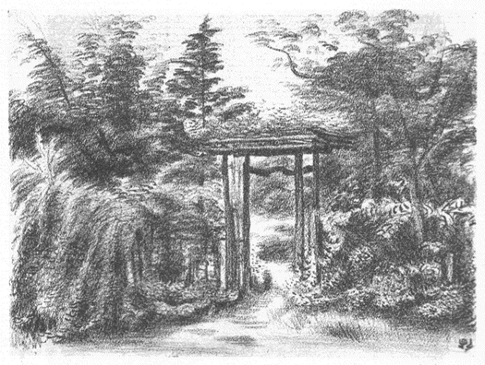

| 白南風 | |
| 北原 白秋 | |
| (2015) | |
白南風
北原白秋

白南風は送梅の風なり。白光にして雲霧昂騰し、時によりて些か小雨を雑ゆ。鬱すれども而も既に輝き、陰湿漸くに霽れて、愈〻に孟夏の青空を望む。その薫蒸するところ暑く、その蕩揺するところ、日に新にして流る。かの白栄と言ひ、白映と作すところのもの是也。蓋し又、此の白映の候に中りて、茲に我が歌興の煙霞と籠るところ多きを以て、採つて題名とす。もとより本集の歌品秋冬に尠く、春夏に多きもその故なり。
我が短歌に念持するところのもの、即ち古来の定型にして、他奇なし。ただ僅かに我が歌調を這箇の中に築かむとするのみ。その自然の観照に於ては、必ずしも名山大沢に之を索めず、居に従ひて選ぶ平々凡々の四囲に過ぎず。又、その生活感情の本とするところに於て、あながちに一時の世相に関せず、社会機構とも強ひて連工する無し。而も又、孤高を潔しとし、流行を斥くるにもあらず。ただ専ら短歌を短歌とし、自然を自然とし、我を亦我とするのみ。本分は我自ら知るべきなり。
惟ふに風騒いやしくもすべからず。かの光明に参じ、虚実交〻にして荘厳の秘密を識る、畢竟は此の我を観、我を識るなり。一なる生命の根源に貫徹すべきのみ。乃ち、心地清明にして万象おのづからに透映し、品格整斉して気韻おのづからに生動せむ。純情にして簡朴なる、幽玄にして富贍なる、情意臻つて詞華之に順じ、境涯極に入つて象徴の香気一に鐘る。一首は遂に一首にして亦生死の道なり。質実にして強靱ならされば得べからず。
又、惟ふに、神工にして成るものは稀なり。我が如きは、ただに玄微に玄微を捜ね、一音に一音を積み、而も鈍根にして未だ全く達するところを知らず。ただ好むところに殉じ、時に随ひて行ふのみ。苦楽もと一なり。霊感は安易にして俟つべきにあらず。ただ日常にありて忘れざるべきを思ふ。精錬の道にして、初めて成就すべき業ならむか。恭謙ならざれば到り難し。
『白南風』一巻、もとより屑々の歌集にして、何らの気に負ふべきものなし。日光・月色・風塵・草卉・魚・鳥の諸相、季節と生活、単にただ一々の歌品を以て、偶ま同好にして渾厚の士の清鑒に供へむとするのみ。言説すべきにあらず。
昭和九年四月
砧村の雲と鉄塔の下にて
白秋識
大正十五年の、谷中天王寺墓畔に於ける生活に由る。新旧作合せて、短歌二百五拾弐首、長歌一篇。墓畔吟なれども必ずしも哀傷せず、世は楽しければなり。
移り来てまだ住みつかず白藤のこの垂り房もみじかかりけり
厨戸
のとのもの小米花
闌
けにけり衣
干したり子らがさごろも
春まひる真正面
の塔の照りしらむ廻縁
高うしてしづかなる土
塔
や五重の端反
うつくしき春昼
にしてうかぶ白雲
音きざむ珠数屋が窻の板びさし椎の古葉
のつみて久しき
春まひる隣に聴きてひそけさよ珠数みがく子らが息吹
ためつつ
木蘭
は花の立枝
の影濃くて表
にほへりいちじろき照り
木蘭
の花立ちひらく春日すらひめもすや人の珠
磨きする
さしなみの隣につづる珠の緒の現
なりけに春はかそけさ
春過ぎて夏来にけりとおもほゆる大藤棚
のながき藤浪
墓地前は石屋が軒をうづみてし白雲木
の花もをはりぬ
動物園所見
鷺
白鷺はくちばし黝
しうつぶくとうしろしみみにそよぐ冠毛
槙
もやや光る葉がひを秀
に佇
ちて青鷺の群のなにかけうとさ
鶴
鶴の巣と松の根方に敷く藁は今朝
さやさやし新
の麦稈
松の花あかる日竝
を巣に群れて丹頂の雛は早やあらはなり
珠鶏
脊に負ひて霰小紋の両
つばさほろほろ鳥
は声ふくむ鶏
珠鶏
は頰
の瘤赤し片寄りにみな横向くとただほろほろに
ほろほろと啼く珠鶏
のこゑきけば夕日ごもりになりにたらしも
夕かげの砂搔きあますくくみごゑほろほろ鳥
の連れうごき来る
前廂ふかきこの家を門庭
は日の照りあかり若葉かへるで
石のつま湿
らふ見れば藍微塵檀
の花のちりて時あり
若葉して日射明れどこの空や朝より煤
のきらひふりつつ
根府川石
やいまは日ざしも夏まけて板屋かへでの若葉映ろふ
石
の面
にむらがる羽蟻音立てて香
は時経
ちし春蘭
の花
庭石にささとむらがるひとときは柔
き羽蟻もいきほひにけり
うちあがり羽蟻かがよふ若葉木の暮合
の空をいつくしみをる
靄ごめに萠えてうづまくむらわかば墓地の空
こそ照りあかりたれ
日はすでに照りかがやかし若葉木や東に塔のつまぞ反
りたる
瑞若葉
紅
の扇骨木
は日の照りを躑躅まじらひ花かとも見ゆ
角
吹きてうつら添ひ来
る荷かつぎの夕ごゑながし扇骨木
生垣
父と母夕
安らけく附かすなり扇骨木
もえたつ墓地の霞を
仏にはかかる和
をと宣
らせこそなどか愛
しき光る若葉
若葉陰しみみにまとふ蟆子
の羽の眼にかゆきからわれは搔くなり
椎はもえ樟
は闌
けゆく若葉森この日移りのしづかなれこそ
石のべの躑躅の蕊
は長けれど萎
えつつ垂りぬ日の光沁み
義の叔母村上氏、齢七十にも垂んとして、何故にか我が叔父と離別して、今は流浪の身を、この同じ谷中のさる寺に養ふやに伝ふ。ほのかの便なれば、その寺の名すら知るに由なし。幼少の恩愛忘れがたく、暇ある毎にたづねありく。乃ちその歌。
寺おほき山はこの空寺ごとに桐の花咲きて匂ふこの空
花ふかむ桐の木群
のとのぐもりこもれる君が空もわかなく
山川とをさなかりける我さへやまさしく老いぬ人は知らずも
とのぐもり紫こもる桐のはな暮合
の空にけふもなりぬる
朝早やも咲きぬ咲きぬと搔きためて子がかかへ来る花筒の花
童
よこは朝かげの花ならず夕かげに葬
りみ墓べの花
いづれよし花は清
しよ朝花と咲きも咲かずも露しげき花
朝なさな求
めてつつしむ墓の原に新埴土
のいろのつゆけさ
あさみどり若葉映らふこの墓や埴
のぬめりの何ぞつやめく
我は誰
ぞ筇
は曳きつつ新墓
の日に殖
ゆるすら朝眼楽しむ
新土
に草の香ながれ風疾
し何思ふ我のうつくしみ佇
つ
朝東風
の吹きひるがへす朴
の葉は葉おもてひろくすがしかりけり
吹きはらふ風さき清
にこの朝や靄は霽れゆきて天王寺の塔
この道や朝は葉づたふ木
しづくのしづけかりけり石にひびきて
若葉洩る朝の光は父われの麦稈帽に沁みて子が手に
子を連れて墓地は若葉の日のひかりしみじみと思ふすこやけき息
空
しかり死にし幽
けき為すなかり我は世に生きて繁
に喜ぶ
吹きちらふ物みな涼し朝東風
や石塔うへの藍微塵
の花
石のべは三角柏
の葉ごもりに蚊の声ほそし立ちてゐにけり
犬牽
くと墓地をとめぐる朝涼は力張るらし草分きにけり
草間
来て荒く息づく面
がまへブルドツグ勢
り手綱張り引く
若葉どき雲形定規かきいだき学生は行く燃ゆるその眼眸
若葉森早や鳴き勢
ふ春蟬の若やぐ子らは思なけむか
朴
の花白くむらがる夜明がたひむがしの空に雷
はとどろく
ひむがしに群れてかがよふしろき花朴
の喬木
ぞ木立してけれ
生けらくは生くるにしかず朴の木も木高
く群れて花ひらくなり
現身
は生きて朝間
ぞすずしけれ愚かなりけり死にてむなしさ
光発
しその清
しさはかぎりなし朴
は木高
く白き花群
鳩
鳶
雀うぐひす矮雞
の鶏
この朝聴
けばいろいろの鳥
朝霧にほろこほろこと啼くこゑはここの御寺 の鳩にかもなも
日に黝
む紅
の扇骨木
は梅雨前
と刈りそめにけり朝涼夕涼
何の木か秀枝
しづもる夜目にしてしろくはさら
と落つるその花
短夜
はいまだ暗きに小嵐
や朴
の木の梢
を揺りぬまさしく
下葉うちたたと石うつ清
し花朴
の木の花の一夜落ちつつ
墓石に朴
の散花
日を経れば縁
朽ちにけり一弁
一弁
直土
に饐
えつつ黄ばむ朴
の花昼は仔犬が搔きてゐにけり
石の辺
は朴
の散花
数ふえて梅雨
の日癖の雨期に入りにし
墓原は小雨
しめやぐ夜に嗅ぎて吾が堪へがてぬ大葉樫の花
花樫の香に立つきけばけんぽなし若葉ふきあかる山恋ひにけり
姥目樫
かをす雨夜はつれなくてかしこかりけり墓地を抜けをり
香
にはずむ樫の木
ぐれは夜ごもりに苦木
の花もふけにつらむか
花季
は樫の木
ぐれを行きありく餓鬼もこそをれ真夜ふけにけり
椎かしはむせぶここらの雨夜月
卵塔はわびし照りもかへさず
動物園近し
樫いとどにほふ真闇となりにけり夜ふけくるひたつ鳥
獣
のこゑ
声呼ばふ墓地のかかりの夕餉
どき遊びあかねば子らは愛
しも
昼のごと青葉かがよふ燈
のおもて墓地のはひりもここだすずしさ
陸橋に灯
の点
く見れば夜靄立ち鶯谷の春も去
ぬめり
電柱の影うちかしぐ夕月夜切通
し上のあらくさのはな
塔の端
月明らけしひらら飛ぶ二つ蝙蝠が金の羽の裏
墓地前の花屋が花の中
明
るみづみづし燈
の月の夜に見ゆ
月夜風しろう幅
だつ墓地わきを影はずみ来る母と子らはも
椎若葉けむる月夜のうつつにも燈
とぼす窻か珠数かがりつつ
隈
だちて家廂
ふかき月の夜もおもての墓地は照りまさりつつ
探海燈夜空薙ぎゆく墓地の森や女のこゑも月に立ち来る
うしみつと夜のふけゆけば草木みな寝
にしづむらしまして墓原
月よあはれ立ち蔽ふ雲のいやはてを蛍火のごとも光りけるかなや
我のみや命ありと思ふ人なべて常久
に生くるものにあらなくに
わづかのみ明
る木膚
のさるすべり夜は深うして笑ひけらしも
黒南風
の雲断
れにけりこの夜ふけ月ほそく光り鷺と鶴のこゑ
真夜中といよよしづもる夜の空の梧桐
のはなちりそめにけり
纎
くのみ月の見え来る短夜
をまだ最中
なり落ちしきるもの
吾が観るは幽世
ならず朴の葉に月出で方の黄の火立
なり
ほそき月夜ふけて光るひむがしは雲黒くしてあらはえの風
草いきれあつき日なかに汗は滴
り無縁の墓のうつら昼貌
日ざかりは未
だし現
しきもののつやほの肉色の昼貌のはな
そよろと風過ぎしとき日中
の昼貌の花ぞ内ら見せたる
石だたみ墓地の十字路
の日の闌
けに音とめにけり落つる榎
の実
うしろ肩大き仏ぞいましける月の光のながれたるかも
暮れにけり露仏の螺髪
くろぐろと月あかりしてうづだかき肩
墓原の木立の奥所
夜はふかし月の光のたたずみにけり
物の風か気
に立ち来らし木の間洩る月の光のわななきにけり
我と同じ名の白秋といふ人の墓あり。若目田氏たり。明治十九年没、勤王の志士なり。容貌性格我によく似たるものあるが如し。その嬬人菊池氏、吾が妻はまた菊子なり。因縁浅からず、ひとごとならず思へば、時をりに行きては墓を清め、花などをささげて、我と亦自ら慰む。
墓の座に鉄砲百合の粉は触れて日の照はげし我はぬかづく
命かよふ我かとも思ふ朝じめりこの墓庭の青苔のいろ
青苔に染
みうつくしき斑照
りこの木洩れ日は幾時あらむ
この墓に日ざししづけくなりにけりきのふも来り永く居
りにき
蒸しつつも現
ならぬかこの墓地の日ざかりを靄の立ちてあはれさ
日のうちはなにかつやめく物のこゑ墓原ごもりひびきゐるなり
墓原や昼の霞の中あがる紋白蝶
の翅のちらと輝りたる
眼はあげて吾が附く道のけどほさよ白南風
の空をひとつ飛ぶ蝶
気
にふかき蝶のむつみや誰知らぬ墓うらの照りのすでに久しさ
紙のごとひらひらとこそありにけれ蝶の双
つぞ照り合
へりける
朝は見て息もつきあへずあら墓や力張りきる鉄砲百合の花
新土
は朝にいつくし雨名残いとどしくすがし鉄砲百合もよし
接待の泡盛は琉球の大甕なり
吾が門
の向ひの墓の夕月夜水うたせたるおしろいのはな
気色
だち神輿
練り来
るゆふぐれは茅蜩
のこゑも墓地にとほれり
水うちて月の門辺
となりにけり泡盛の甕
に柄杓添へ置く
市中
は残る暑さを樫の森や月あかうして向ひ墓原
墓原や石の角目
に照る月の光うち蒼み夜ただ木
しづく
蕚 のいろ雨に浮きたり。呼びそめぬ、ラヂオのニユース、フラン落ち、巴里暴動す、ポアンカレーまた世に出でむ。子らよよし、冷麦 食べむ、実山椒は奴 につけむ、月待ちがてら。
墓原の木立に暑き蟬のこゑじんじんときこえ今日も久しき
この暑さまだし堪ふべし色褪せて蕚
あぢさゐはほろほろの花
日のほてりはげしけれども石
の間
や細葉のつつじ株さびにけり
墓地の十字路にて
夜目
ながら老木
の榎
洩る月のしろがねの網に狂ふものあり
展望
百日紅
花いち早し眼はやりて向ひの墓地の今朝はすずしさ
風かよふ百日紅
の花見れば立秋のけはひ既にうごけり
中垣
対
ひ葉の枝の秀
ごとの紅
き花百日紅
のちらら咲き継
ぐ
門庭
をこなたへ咲きて中垣に影ちらつかす百日紅
の花
つくつくはふしひとつ来てゐる夕つかた袖垣のうへの百日紅
の花
墓地
百日紅
咲きつぐ道は吾が行きて利玄分骨の墓も涼しさ
百日紅
下照る道の石だたみ子とひろひつつ蚊のこゑ暑し
百日紅
滑
ら木肌
のこぼれ日は花咲き足らひいとどしき揺れ
花あかき百日紅
の下にして子が立ちとまる影のみじかさ
白秋の墓にて
この墓をすがしと思
へば差出
咲く向ひの墓の百日紅
のはな
本
ごころさびしき時はここに来てしじ聴きにけりつくつくはふしのこゑ
花つみて一荷
はのぼる馬ぐるま寛永寺坂に月は照りつつ
この月に佇む馬の尻向けて花屋が前は露しとどなり
入り広き墓地のまともの宵月夜風とほじろし早き葉はちり
墓むらや月の光のながるればこちごちの石の濡れてはろけさ
本阿弥の露地出でて来れば狭霧立ち月昼のごとし墓の草原
芒
の穂に小寥ひるがほをみなへし遊び歩
かな月夜よろしみ
雨のあし秋づきぬらし椎の葉の前には見えてここだみじかき
塗りづくゑ今朝ひえびえしペン軸に蟷螂
の眼はたたかれにけり
髄
立ててこほろぎあゆむ畳には砂糖のこなも灯
に光り沁む
秋の夜は前の書棚の素硝子に煙草火赤し我が映るなり
目に黒く木末
かがよふ星月夜御院殿坂をひたぶるのぼる
雨たもつ椎の木ずゑの土用芽のかすかに星に光るならむか
小夜中は五重の塔のはしばしに影澄みにけり小糠
星屑
金輪際
夜闇
に根生
ふ姿なり五重の塔は立てりけるかも
立てりけり星屑
たぎる夜のくだち五重の塔は影くきやかに
青
のつま朱
の五重の塔
の今真闇
なり鷺のしき啼き
星月夜九輪の塔の空たかくうち透かし見ればかよふすぢ雲
朝顔にまじるみどりのかもじぐさここらの墓の陰
もうれしき
このあした露おびただしむきむきを穂に搔き垂れてゆらら犬蓼
この墓やゑのころぐさの穂は濡れてえんまこほろぎも露まみれなり
花に遊ぶ
うゑまぜてしをりよろしき秋ぐさの花のさかりを見て遊ぶなり
曼珠沙華了る
曼珠沙華
茎立
しろくなりにけりこの花むらも久しかりにし
彼岸ばな今はおどろと巻鬚
の朱
もしらけたり長雨
ふりにし
よちよちと立ちあゆむ子が白の帽月のひかりを揺りこぼしつつ
木蘭
の濃き影見れば良夜
や月のひかりは庭にあかりぬ
竹柏
の葉と木蘭
の葉の影交し月は隣の家
の上に来ぬ
家竝
の高きアンテナ月の夜は光りまさりぬ濡れにけらしも
照る月の夜空にまよふあるかなき薄翅
かげろふの尾は引きにけり
板縁は月夜ふけつつ玻璃のかげ引きてゐにけり光る幾線
総玻璃のとのもの月夜ふけにけりしろくかびろく庭石は見ゆ
石
の面
に月の光は冷
えはてて音ひとつ無しただにその影
月夜ふかし光しづもる木々の間
に羽虫かと思ふ影のちらつく
裏うがつ月の光となりにけり黝
き茂みのゆづり葉の垂り
一木櫨
いよよ照葉
のことごとに染
み出
来にけり櫨はその葉に
観つつあれば櫨の紅葉の一ひらちりまた二葉ちりぬ日の照る石に
石のべの櫨の落葉はよく掃きてまた眺め居り散りてたまるを
櫨紅葉下照る土はしめやぎて帚目
正しちる二葉三葉
はらら散る櫨は落葉ぞおもしろき表
火のごとく裏べ寂
びたる
石のべに櫨の落葉を吹きためてはららきし風も止みゐたりける
立襖は金泥をちらし、桔梗・薄・女郎花などを肉筆にて描きたり。
立襖 もみぢにあかる夕 の間 を籠らふふかき日ざしなりける
色鳥
菩提樹の落つる葉早し尾を曳きてめづらにつどふ色鳥の影
刈りこみて
吾庭はみ冬ちかきに刈りこみて躑躅のほそり目に立ちにけり
空寒し今は葉も無き菩提樹の木膚
かぐろく伐口
のいろ
落葉のあと
ひえびえし冬の日ざしとなりにける土に落葉の光れる見れば
かへるでの枝こまごまとありにけり葉なみふるひて今はしづけさ
まれまれに椎の葉にもつたまり日
も照りはかへさず冷
えまさるらし
椎の葉に冬の日のあるほどほどはうれしき珠数の珠
も磨るなり
錦木の時雨紅葉となりにけりふりみふらずみ日にくすみつつ
冬青
の葉に走る氷雨
の音聴けば日のくれぐれはよく弾
くなり
目にたちて菊は白けど置く霜のむらさきの凍
み光こもれり
菊の香のこもりてぬくき冬日向蒲団の綿はゆたにうちつつ
墓原の空地
に繁きゑのこぐさ子ら踏み荒らし地膚
すら出
つ
墓地裏も集
ふ子供の影さむき冬の薄日
の照りとなりにき
墓地裏に騒ぐ子供のこゑきけばおほに澱
めり霙かも来む
朝しぐれ塔の庇のあをあをと木立はづれに見えて寒けさ
向う墓地冬木したしくなりにけりこちごちの靄は落葉焚くなり
上光
るけだし榎の乾葉
ならむこまごまと溝をふりうづめたる
凍土
になにか落葉の二葉三葉朝早き風にそそ走りつつ
冬の雨の石にひびかふ墓地の闇母と来る子は歩みとどめず
墓原を帰り来る子のこゑきけば氷雨
すさまじくふり乱るらし
をさな児は軍歌うたひていさぎよし外套に靴に氷雨
はじき来る
枯枝に白銀
かがる月の夜は光ほそうして冱
えにけるかな
霜の凍
みいたもきびしき土のうへに南天の紅葉はらら散りたる
榊の実黝
ずむ観れば袖垣の結
ひ目も凍
みぬ霜の気
に立ち
墓原の花すてどころ霜ふかしつくづくと今朝は我もきびしき
霜ふかき花すてどころ目につきて南天の実は鈴の赤玉
山茶花の最寄りの日向しづけくてたまたま来れば子らつどひけり
童
どち足踏しつつまだ小
さし山茶花あかく咲きにけるかな
たかだかと冬木の朱実
垂りにけりきびしくも凍
むか向ひ墓原
暮の靄子が背囊の毛に凍
みてしろく粒だつ寒
到りけり
冬木原
寒
の靄ごもり行き消ゆる人あし見れば暮せまりつつ
暮れぎはの寒
の靄かかる冬木原
外套あかき子も来
るなり
冬すでに頰のみ燃え立つ雄の雉子の駈け走る見れば日もつまりけり
石のべの紫蘭の莢
に来て光る蜻蛉
の翅
も小
さうなりにけり
この墓に凍
みつつ白き山茶花の蕊
あざやけき寒
は来りぬ
墓原の遅き月夜の石だたみ山茶花ちらし止む旋風
あり
今朝も見る閼伽
の氷のさやけくて子はたたきゆく墓石ごとに
山茶花は末もつぼめど濃き紅
の上凍
くろしつひに開かず
もんもりと雪ふりつもる朝まだき知音
の墓は求
めて親しさ
雪は観て早き朝餐
をたおたおと木ぶりをかしく揺り出
しづけさ
薄墨とけぶる低めの空にしてよにしづけきは百日紅
の雪
人踏みし雪の窪みに声はしてなにかひもじき雀入りをり
さるすべり枝のぬめりにつむ雪の時しづれする声のみしろし
むらさきのこもりしたしくなりにけり見てのみか居らむ薄き障子を
雪あかり早やすべしなし張りつよき白き障子に燈
は向けてあらむ
大君の御悩
のニユースきこえ来
ぬ絶えて音なき霜夜しづもり
霜の凝
り堪へてこの夜もすわりたりラヂオのニユース声せまりたり
霜くだる今宵
のラヂオおぎろなし心とどろくひと時隔
きに
霜の夜のラヂオのニユースはてにけり灯
は明
うしていたくしづけさ
縁の戸にひびく霜夜の玻璃の罅
ひたなげき寝
ず御宝我は
大君は神にしませばこの霜のとほる夜ふけは聴きておはさむ
冷
えとほるほどろの霜や冬青
の葉の垂り葉の光ゆらぎ止
みたる
現神天皇
にましましてなほし常無く坐
すがかしこさ
あらたまの年立ちかへる日は見えて神あがりましぬ霜のしろきに
健
けく常は坐
さずも大御命
長く坐
せよと仰ぎしものを
ほがらけき崇
きたふとき大御業
つがせたまひき短かかりにき
石
の面
にいやさむざむと日はかげりたづき知らずも生ける蟻匐ふ
冬木の根に凍
む土の張り乾きかうかうと響く道を行くなり
天王寺歌会即興、録二首
梅もどき籠に挿しつつ用は無し来馴れし人の来れば待つなり
吾妹子
が挿してうれしき落霜紅
オンスコツプのくちばしよしも
寒夜、日暮里駅のベンチに相抱きて暁に発つ汽車を待つ母と十一二の女の児ありき。子は雛妓の見習に上京中、肺患のため母の迎ひを受け帰郷せんとするなり。あはれなれば家に伴ひ一夜を送らしむ。後その子死にたる由の報知来る。
母と子のおもざし見れば寒き燈
にすべなしばたたきよく似たりけり
吹きさらしひびく霜夜にかきいだき母と子はありき温
みとるとて
女童
は繁
に咳
き入る寒き夜を小糠
小星
も風に冱えにき
ただにありき炉の火かきおこし寒むからむ温
もりてよく寝よとのみわれは
死にせりと母が書き来
し文見ればその子が笑
ひ力なかりし
墓原に風は吼えながら朝わたる月夜なりしか白
みそめにき
子にくるむ衾
そだたき一夜
いねずたづきなかりけむか人の親母は
この夜ごろ火に立ち騒ぎ止む間
なしかぎりなく寒く人はまづしさ
すさまじき夜の火なりしか墓地ぬけて暁の霜に身ぶるふ今は
霜いたり空は濃青
き夜の明けに筑波の山はくきやかに見つ
柿の蔕
黒くこごれる枝見ればみ冬はいたも晴つづくらし
深廂
昼もをぐらき家の内に灯
はとぼしつつ春を待つわれは
とのぐもり煤
の気
ふかく立ち舞へば咽喉
ゑごくして春もくるしさ
何か花にほふ雨間 の木 のくれを妻とし歩 くゆゑはしらずも
昭和二年の晩春より同三年の初夏に至る馬込緑ヶ丘の生活に由る。新らしき文化住宅地緑ヶ丘の突端にある此の馬込の新居は、明朗にして簡素、月・霧・燈火の夜景は亦九十九谷の名にそむかず、少くとも近代詩趣の一年なり。
吾が門
は通草
咲きつぎ質素なり日にけに透
る童
らがこゑ
厨戸
は夏いち早し水かけて雫したたる蝦蛄
のひと籠
この小さき鐘と撞木は前の主人の遺し置けるものなり
小
さき鐘撞木
とりそへ吊
したりこの家
のはひりすがしとも見よ
小
さき鐘掛けてすがしきこのはひり戸は鎖
しにけりそよぐ木の影
風そよぐヒマラヤ杉の二三本
はひりの庭は今朝もすずしさ
吾が童
鐘にとどかず脚立
よりのびあがりうつ面
仰向
けて
恋
しかる昼は待てどもうつ鐘のまたわづらはし人にこそよれ
誰待つと家居るならずおなじくも憂ふる人の来
よと思
ふのみ
まれびとか或
は来けらし軒鐘や音のさやかにふたつ鳴りたり
家垣の築土
のあやめ咲きにけり童
な手折り通りすがりを
あやめ咲く築土
に添へば鴨跖草
や隣もすずしふり乱る露
蟆子
の立
口にかゆきか吾が童
夕ばえの頃は声はずむめり
月はあれど夕立つ雲の気
に見えてなにか逸
れたる蒸しかへしなり
日に闌
くる草の香嗅
げばこの崖や昼貌の咲く色もまじれり
昼貌は昼もあはれや容貌
清き稚
どちゐて草に坐りぬ
二人の子供は隆太郎と篁子なり
草生
には出で入る子らが二人ゐて昼ふかきかなや大き星見ゆ
月のごと大き星昼の空にありウィンネッケよあはれ人は貧しさ
うち開くわが屋
は高しゆりの木のほづえに花も現れにけり
大き鳶たわたわと来て過
ぎるとき穂にあざやけき丹波栗の花
大き窻今朝うちひらき朗らなり芝の刈生
に子は飛び下
りる
白き柵をどり越え来てわが太郎窻這ひあがるこの朝づく日
梅雨
ふかし薄ごもりに生みためて鶏
の卵の光沢
も失
せぬる
卵ひとつ生まずあはれと見つつゐし生みてありけり鶏
は草生に
半夏生
早や近からし桐の葉に今朝ひびく雨を二階にて聴く
しやしやと来て篠懸
の葉をひるがへす青水無月の雨ぞ此の雨
断層の青萱見れば吹きなびく風竝
しるしかがやきにけり
梧桐
のふふめる花の穂に立てば二階も暑し窻は開
け置く
日は午
なり靄たちこむる向う空にカキ色の気球熱しきりたる
午
の坂黄なるドレスののぼりゐて電柱の影が彎
みたり見ゆ
憤怒
堪へつつのぼる我が歩み陸橋にかかり夏の富士見ゆ
陽炎の揺りあふる見れば朱
の桁や鉄橋はいまだ架け了へずけり
かうかうと鉄の鋲うつ子ら見れば朱
の鉄橋は雲に響けり
蒸す雲の立雲
思
へば息の緒に息こらへ立つ憤怒
の神
こまごまと茱萸
の鈴花
砂利に散りあはれなるかなや照りのはげしさ
日は暑しのぼり険
しき坂なかば築石垣
のこほろぎのこゑ
白栄
の暑き日でりの竹煮ぐさ粉にふきいでていきれぬるかも
馬込
盆地の暑き小峡
にうちひびき蛙
は啼けり草いきれ立ち
声合
す草田のかはづ昼闌
けて間
を啼きしぶれ深むものあり
末つひに人の命は長からじ眼には笑
みつつ肩喘ぎけり
水さしに水はあらぬをほそぼそと吸ひほけにけり透きとほるもの
かくしつつ人の命は過ぎなむやちかぢかと眼を寄せて見むとす
眼力
かくのごとくば真夏さらずあはれほそぼそと人は死にせむ
山なすここだくの書
ほこりつもり暑き日なかを息継げり君は
生きざらむ命思はず仰ぎ寝て手は拱
みにけり敢て息継
ぎ
下冷
えて額
ににじむ薄ら汗おもほえばしじに君も生きにき
二階に咳ひびきけりかいかがみ今はすべしなし靴の紐むすぶ
おもての光くわうくわうと流れたり強ひてまともに眼は向けて出
つ
いたいたし脚のほそりの眼をさらず我は踏みありく光る直土
真夏過ぎ簾
うごかす廂合
の朝の涼
かぜを君はたのめぬ
うちそよぎ風吹きかよふゆりの葉に朝は朝日の透きてすずしさ
広き葉の半
は黄なる本
つ枝
に早や風涼しうちかがむ猫
ひとすぢに夏野よこぎる道しろしおのづからなる歩みつづけむ
道のべの車前草
硬
くなりにけり真日
明
うして群るる子鴉
風ひびく葉広
篠懸
諸枝
立ちあざやけきさ青
の火立
騰
れり
ポプラ葉のかがよふ見れば涼風立ちさながらに日の光るさざなみ
吹く風の幅は揉みぬく栗の葉の葉あひに青く毬
の群れたる
夕かげのおもてに移る合歓の花ほのかに君もねむりたまひぬ
いとどしき残暑の照りとなりにける繁立
ほそきその赤松に
赤松の直立
つ見ればあきらけく正面
の西日木膚
照らせり
夕かげはにほひこめつつ靄ごめに畳みよろしき松が枝の笠
赤松の一木
が撓
る向う丘夕かげの中に風の吹きしく
夕
早く風にさはめく赤松の林のほそみ見るがすずしさ
み寺には百日紅の閑
かなり洗足の池の夏も過ぎたる
池のべの楊
が傍
に咲きあかる漆
の花はまだあはれなり
現世
の漆
の花のひと木立﨟たくしろき月空にあり
みなぎらふ夏の光も過ぎにけりわが対
ふ池の薄らさざなみ
残暑の日ざし冷
め来
るさざら波ただひとりなる舟は遣
るなり
竹煮草今は穂に垂りしづかなり鶸茶
の莢
の朱
のいろの液
隣りびと W. Timacus の厨
には窻はうち開きフライパンが見ゆ
露つけて今朝すばらしく真青
なりうしのしつぺいの放射線の芒
露草は朝露しげし今朝咲きて涼しかるらし黄の小蕊
立ち
松の木間
栗の花ぶさ返り咲き日光室に日の光る見ゆ
朝めざめ清
にすがしき戸は開
けてヒマラヤ杉は大粒の霧
吾が起きてただに瞰下
す門
の戸を濃霧しづもり谷地
はこもりぬ
森と言へば叢立
つ霧のこちごちに気高
く厚く塁
立てたる
朝月夜
いまだも夜霧とどこほりひむがしの丘に日あし立ちたる
高き屋に光射し満つ我が丘を明暗
の谷の街
ぞとどろく
窻ちかきヒマラヤ杉の秀
は揺れて光り来にけり月出づる方
わが門 はヒマラヤ杉の朝月夜影がそよげり鋪石 のうへに
馬込
は谷おほき里、とりよろふ丘の岬々
、朝に夜に狭霧立ち立つ。高窻や東に開き、西をあけ、南もあけて、うち透かす賑ふ灯
、山中
のみ湯のさまかも、月さへも紫明る。霧はおもしろ。
女童
が眶毛
にやどる露のたま月のありかは雲の上
にして
木の間洩る谷地
の灯
あしの線
引きて蛙
が啼けば子は寝
ぬるもの
ひとり行く
ひとり行く歩みとどめて眺めけり水芋の葉に月の宿れる
おのづから歩みはとまる道すがら芋の立葉
のことごとの露
美童に遇ふ
月を指
す幼児ゆゑにあはれとはいみじかりけることを言ひつる
珠
ごと露の立葉
に月は照り清き童
の面
あげて佇
つ
犬の吠
近き月夜の野路
の霧誰かころろと歩みかへしつ
清らけき母を思へば月の面
に微塵の氷吹きつくる影
白鷺の月に見えつつ飛ぶ影は正眼
ながらに霧しまきつつ
母を思ふ現
の声や夜風の硝子戸たたき消ゆる疾足
秋ちかき月の夜ごろは雲と言へばしろく流れて片明りつつ
涼しさははてなかるらし真木山や隣る月夜の小竹
の葉にして
影いくつ涼し月夜や古木の梅つつじ藤錦木ほそき孟宗
梨の棚あをきすはえに照る月の光しづもり鳥屋
の戸も見ゆ
草ごもるかけろ探すと子らは出て月にわけをり薄き月夜に
搔きわけて涼しきものは篶
の秀
や月の夜ごろの山いもの花
篶
の葉に月の光は遊べども吾が利心
よいまだ和
まず
咲くものはつひにあはれよ月夜照
り山いもの蔓にそよぐ涼風
おもしろの月の夜ごろや草に居て眼に入る物の風そよぐなり
かぎろひの夕月映
の下びにはすでに暮れたる木の群が見ゆ
月の照り匂だち来
る雲ながら木原が上は色のさむけさ
月の映
こもりてしろき夜の靄に煙かと思ふ色ぞうごける
遠じろくうごくけむりのふたながれ月の光も渡りつつあり
ひと時は夕月映にめづらしき遠近
の谷の早き燈火
馬込は霧多ければ円月もまた紫に見ゆることあり、光悦の屛風と思ひ合せて
中明
る紫の月丘にあり秋ぐさの花の乱れたるかも
桔梗
の月にさやけき松が根はひとりかがむにしくものぞなき
洩れいづる月の斜光となりにけり雨は盆地の灯
をたたきつつ
匂だち湿
らふ雲の影見れば小夜ふけと月もふけて和
ぎなむ
はるばるとわたる月夜のうろこ雲現
しき母の子をかかへ佇
つ
月夜よし遠き梢に下
り畳む白木綿雲
は雪のごと見ゆ
月高し谷地
の夜霧に尖
り出
て急勾配の濃小豆
の屋根
しゆうしゆうと夜霧ながれてありにけり月に光るは玻璃の屋根のみ
二階の和室にて
硝子窻月に開きて坐りけりつくゑにうつる壺と筆の影
筆立のとりどりの影しづかなり月夜ふけつつひとり坐るに
塵ひとつ月に留めじと思ふなり黝朱
の塗
の清
の文机
ふけつくし月の騒ぎも過ぎにけり梧桐
の葉に今は澄みたる
つくづくと観る月ならし夜の遅き光に妻が面
向けたる
目は盲 ひて笑 かすかにおはすなり月のひかりの照らす面白
秋さびしもののともしさひと本の野稗の垂穂瓶にさしたり 千樫
秋の空ふかみゆくらし瓶にさす草稗の穂のさびたる見れば 同
秋ふけぬ物の葉ずゑに立つ蟆子
のかそけき光ただに思はむ
稗草の穂向
にちらふ蟆子
のかげ驚きて思ふうらさびにけり
さびさびて今は光らぬ野稗の穂親しかりにし人も死にせり
野稗の穂瓶
にさしつつうらさぶしかくのごとくや人の坐りし
吾が門
は電柱の根に夕日さしうらがれぐさの穂が映
るなり
§
草の穂に移ろひはやき日のあたりこのごろはわれも病みやすくして
家にこもりて
皇礼砲とどろと響き雨間
なり柿のもみぢがうつくしく見ゆ
航空船黄にうかび来てとどろけりなにかはさむき日の曇りなり
はらら飛ぶ小禽
あはれと観つつゐて霜の葉おほき木々に驚く
とのぐもり羽ばたきとよむ飛行機は向ふ時雨に今は列竝
む
吾が庭は白き小菊の銭菊のただに明
りて朝の濃き霜
菊の花酢にひたしつつうらさぶしかくしつつこそ秋も過ぎなむ
白菊の青み冱
え来
る夜の寒さ百燭のあかり近く寄せ置く
御会式の万燈あかく山を去り蹤
きゆける太郎この夜帰らず
子を呼べばまばたきすもよこの夜さり谷地
の灯
あしが眶毛
なし見ゆ
父われの大き靴はき童
なり万燈に蹤
きていづち向き行く
わが聴くは小さき足音ひとつのみ夜は暗くして群の足音
灯
は多しもとも大きくみづみづし紫の燭
は映画館ならむ
吾が庭は若木錦木もみぢして椎の根方も照りとほり見ゆ
光無き冬の入日の朱
のおぼろ西の曇りのあやにしづけさ
神無月合歓
の老木
のもみぢ葉のすでにわびしく濡れわたるめり
朝にけに時雨なづさふ雑木立最寄
りの丘も染
みて来にける
十方に放つ黄金
の日あしなり欅の寒き冬の木のうへ
群禽
の木末
にきほふひとなだれ遠
のながめも寂
びあまりけり
み冬づく丘の家居
に立つけぶり湯気おほけれやあたたかく見ゆ
目にたのむ寒き木
の間
の赤屋根も煙見せつついつか暮れたり
暮れにけり師走の谷地
の家
びさしにこごりて白き寒靄
のいろ
こま形
の銀杏
の散葉
黄
に冱
えてその向き向きを霜のよろしさ
土に凍
みて今朝の落葉はおびただし木履
つつかけそこら掃きゐる
黄なる葉と褐色
の葉とちりにけり黄なる銀杏
がまれにこまかさ
枯れつつし色に目だたぬ雑木やま向ひは霜の晴れにたるらし
立ちほそり寒き木ゆゑに裸木
や霜朝
の空に末光るなり
冬の日の光冱
えたつ浅葱
は添ひゆく子らの頰
に映るらし
ほろほろと行くにくづるる崖
の土こごりきびしき霜ぞ立ちたる
男
の童
父の杖とり犇
とうつ霜柱しろし此の霜ばしら
こごり立ちしづけかりしかひた乾く地膚
はららかし踏む霜ばしら
隆太郎を砧村の成城学園に入学せしむべく、先づ行きて参観す。
濃き霜の凍
みてさやけき冬菜畑に朝の響の来つつしづけさ
霜いたる冬の玉菜は藁しべにきびしく結
ひぬその株ごとに
朝凍
の大野の霜となりにけり早やあざやかに冬菜積みたる
清々
に根引く冬菜は野に積みて置き足らはしぬ横山のごと
水のべに洗ふ大根
をさわさわに見つつわが行くしろき大根
を
み冬づくくぬぎ林に子らと来て落葉踏みたつる音のひもじさ
くぬぎ原ぬけつつとほる貸家の庭霜くづれ黒し落葉まじり踏む
子を負ひて切通しゆく影寒しこのあたり低き雑木ひと山
風後
の冬の日あしにありにけり通草
の散葉
いまだ青きに
このとぼそ昼も鎖
しつつ寒けさよ日は光りつつ一木
白樺
風すさぶ一木
白樺月夜には影いさぎよし葉竝ふるひぬ
草くづと土糞
焚
きつぐこの日ぐれ五六頭は居らし牛の立ちつつ
寒
の月響く夜空となりにけりしろき梢の繁
み立
つ仰げば
冬木照る月夜すがらやまれまれは山片附きて走る雹あり
白くのみ月にかがやくひと束は紫うすき根の蓮
らし
白菜
はみながら白し月の夜と霜の光にうづだかく積む
白き菜と紫うすき根の蓮
冬はさやかに厨戸にあり
唐画風
白菜
の霜にかがよふ夜明け方歩
き歩
きて鳩は眼聡
さ
しらしらと朝行く鷺の影見れば高くは飛ばず寒き水の田
下
り尽す一夜
の霜やこの暁
をほろんちょちょちょと澄む鳥のこゑ
かげ寒き池の水面
やつれづれと家鴨
およげり鴛鴦
を前に
尻あげて水に竝
みゆく水禽
のちらら後搔
くふりの寒けさ
畑なぞへ冬の砂利道行きのぼる柚子色の帽は悲しきごとし
夕凍
にむらさきしきぶ数
光り電線は切れて橋に垂れたり
冬の道くだりてのぼる木原山射的の音がひどく確かさ
冬の土ひた乾くから小胸
張りかうかうと行く小学生なり
とまり木にからみて朱
き鳥瓜毛は荒しもよ剝製の栗鼠
頤ひげをくひ反
らしつつ愚かなり剝製の栗鼠を氷雨
にぞ置く
冬ちかき一望の寂
映
りゐる剝製の栗鼠の大き眼の玻璃
寂しくも遊ぶ暇
は無き我を剝製の栗鼠はしづけくあるらし
秋冬を心むなしき夕ながめ剝製の栗鼠は眼の光るあはれ
いつまでか長き日あしぞ炎立
ち冬木にたぎる寒空のいろ
寒
の土に佇
ちつくしつつかそけさよ冬は蛍も飛ばぬものをよ
末ほそく下枝
引き張るたけ高きヒマラヤ杉は冬によき杉
さんさんとヒマラヤ杉を洩る月の後夜
たちにけり冬に立つ影
わらべどち憎む境
の切崖
は陸橋がかかり椿花むら
花深く紅
き椿
や下枝
さへ光るばかりを上にも上にも
小学生ら声放
りあげて行きにけり椿の花がひたあかきなり
花ふかき椿はすごしつらつらと出て来てはくぐる子らが足竝
老椿下照る道の春の泥洗足の池はけだしこの奥
雪つもる窻の内
らのゆふつかた火映
親し誰か炉に居
る
雪しづりけはひ幽
けき夜の間
にも紅毛びとは火にか楽しむ
マントルピース火立
華やぐかたへには金髪のふさ透
りゆらげり
穏
しき笑
なるかも片頰照り炉に寄る母の何か言ひつる
老びとの紅
き上衣
はをさなくて灯
にものがなし毛糸編みをる
咲きあかる花かあらしも木原山松の木のまのしろきを見れば
桜咲き馬込の谷もしづかなり霞むかぎりがしろくのみ見ゆ
向丘
の木のまに見ゆる赤がはら家古風にして春日おだやか
本門寺の裏山道ののぼりおり松の木のまの山ざくら花
花曇源蔵原の夕影にみづみづし燈
のひかりいでたる
九歳にて変質の子なり。ひそかに訪れてやまず。
をさなきはをさなかれよと数花
の通草
の門
に立たせつるかな
女童
は心くるへり崖の端
のほのかに萎
ふ昼貌の花
昼貌やここだかなしき女童
を日ざかりの門
に隔てさぶしき
うち見には童
なれども女子
やまさなきことも美しみ思
ふ
つきほなくかなしかるかなかがなべて年のへだたりは三十
あまり五
つ
言ふことはねびてきこゆれ女童
や母を離れてなどか死にせむ
夏衣
の生絹
が裾の高踵
なんぞ童
が少女さびする
女童
は水に戯
ゆるしろがねの鱗
のごとかなしかりけり
昼餉
には庭の芝生にぢかに坐りわが眼先
のかきつばたの花
飯粒
に沁みつつ白き日のひかり子ら食
みあまし父われが食
む
消え易き花火思へば短夜
は玉とうちあげる青き蓋
水の上
や夏は花火の宵々にひかる投網
をかいひろげ消
つ
短夜
の馬込なりしか梟と木菟
のこゑの互
みにはして
子鴉は嘴黄なり車前草
や穂に立つ道の埃
踏みつつ
五年の後
馬込緑ヶ丘、この門
のヒマラヤ杉、来て見れば木高
くなりぬ。夜寒にも燈
はとぼりをり。人や来て住みつきたらし、わがごとやこもり息づく。星月夜
、狭霧立ち立つ、この家の、鐘と撞木がいよなつかしも。
§
秀
に揺れていよよ木高
き影見れば下枝
もふかく曳きにけるかな
たけ高きヒマラヤ杉の星月夜二階の窻に灯
のうごく見ゆ
§
門庭よ冬の夜寒も燈
は洩れて住みつきたらし人香
こもれり
この門よ槙 も通草 も目立たずてすがしかりしか雨つづりつつ
昭和三年初夏より同じく六年の同じ季節に至る、四年間の、世田ヶ谷若林の生活に由る。尤も三年には歌作乏し。家は街道にのぞみ、囂音と塵埃と筆硯の繫鎖とに苦しめらる。しかれども邸内広く、花木多く、奥の庭やや古風にして四時眼を楽ましむ。日常之に添ひ、風韻幽かに成る。
大君、日の本の若き大君、神
ながら朗らけき現人神
。青空やかぎりなき、国土
やゆるぎなき。万づ世の皇統
、皇孫
や天津日継。ああ我が天皇
。大君、道の大君、大稜威。今こそは依り立たせ、けふこそは照り立たせ。高御座
輝き満つ、日の御座
ただ照り満つ。御剣や御光添ひ、御璽
やいや栄えに、数多
の御鏡や勾玉や、さやさやし御茵
や、照り足らはせ。大君、我が大君、現
つ神
、神ゆゑに、雲の上
の照る日の光、采
りてますかも。
反歌
黄櫨染
の大御衣
明
く照り立たし弥
さやさやに若き大君
かくばかり楓
ありとは知らざりき継
ぎ継
ぎて染む秋を驚く
この庭に一木
二木
と照らひたるかへるで紅葉時了りけり
鶏頭はつぶさに黒き種子
ながら鶏冠
の紅
よ燃えつきずけり
わが背戸は食用菊の黄の花の残りとぼしく霜の滴
りつつ
石庭
に冬の日のさしあらはなりまだ凍
みきらぬ青苔のいろ
庭苔に木の根影ひく朝の間
は冬も幽
かに美しくして
木
のま洩る冬の朝日のすがしくて時ならぬ土のかをり息づく
うすうすと朝日さし来る椎の根に心寄せつつ冬はこもれり
檜葉垣の外
とほりゆく影ながら早や親しもよ冬は透き見ゆ
木槲
の一木
の表
闌
けにけりみ冬ながらに日ざしもちつつ
木槲
の葉洩れ日見つつ思ふなり濡石に出でて歩
く蟻ゐず
向ひ見る冬の梢となりにけり細みつくして眺めまさりぬ
昼餉
過ぎいくら経
たぬを木群
には早やしろじろとかかる夕霧
この日ごろ近き空地
に来て騒
ぐ軍馬ありけり風の夜寒
を
軍馬の群この夜とどとし来て居りと思ふだによしを千葉聯隊の馬
観兵式の予行演習に朝出でて夜は寝
に還る軍馬の群らし
§
山茶花や井の水汲
むと来
る兵のバケツ音立てぬその凍土
に
兵士来て井の水汲むと我が太郎眼もまじろがず山茶花の午後を
§
夕凍
を子らと見に出
るとなり原軍馬は群れて還りゐにけり
夜に還り朝発
つ馬の草床は風吹きぬけて置く屋根も無し
濃霜置き軍馬入り臥す隣原夜はふかくして騒
ぎぬるかも
霜は満ち軍馬のたむろしづもらず糠星の数
のただにきらめく
夜のほどろ騒
ぎ立ちゆく音すなり観兵式に列
なる馬なり
大君のけふみそなはす軍馬なれ蹄
の音もさやかに発
つべし
§
駒竝
めて兵還り来ず代々木よりただち本隊へ駈けにたるらし
隣の原また騒
ぐなし風のみぞ夜どほし寒き空に地にきこゆ
夜はしげく軍馬寝
に来し草の原馬臭き肌のこもりかなしも
寝
ねがてぬ軍馬なりしか夜に聴きてなにか心に触るるものありき
その後の夜
常ならず物の幽
けくきこえゐて今宵の雲は凍
みこごるなり
日おもては雑木
にこもる霜の気
の照りあたたかし春めきしかも
輝かでにほふ垣内
の芝生には冬の日ざしぞ和
ぎたまりたる
青鷺にしら鷺まじりあはれなり氷のひびの水に薄きを
圦
もやや角ぐむ葦のさ青
の芽に電球がひとつ流れ寄りつつ
畳
はる木群
のうしろ明るめり月の光の立ちそめにけり
硝子戸にのぼりて黄なる円き月瑜伽師地論を読みつぐ我は
破
れはててむなしき鳥屋
の葡萄棚葡萄の房は垂りそめにけり
むべの棚いまだ青けどひえびえと日ざしとほりて風うごくなり
もちの葉の葉越しに見ゆるわくら葉は桜なるらしよくそよぎつつ
木のうれにふけつつ澱む夜の曇り甜瓜
のごとき月黄ばみ在り
高々とのうぜんかづら咲きにけりただにあはれと観つつ籠らむ
家垣のひともと木槿
光発
し開くただちを土埃
来
る
もちの木は葉につむ埃
いちじるしじりじりと照る真日の光を
街道の地響
しげき日のさかり鏡にうごく木はちすの花 書斎
窻の上
に垂りつつそよぐ蔦かづら涼風たちて実の綴り初
む
吾が宿の萩の中垣荒れはてぬいきれて暑き男ぐさの花
青萱の野萱にまじるさざれ萩この朝涼をすでに綴れり
颱風の逸
れつつしげきあふり雨白萩の花のしとど濡れたる
夕ほてりこのごろつづく芝生には木の椅子が二
つ猫萩のはな
日時計の夕かげ長くなりにけり宮城野萩の叢咲
の花
からかさもみ、一名高野槙、或は金松
雨のふり観の幽
けくて真深
なりからかさもみのしだり緒の笠
高野槙雨こまかなり秋もややけしきだちつつ冷
えまさるらし
田中智学、高村光雲両翁、竝びに国醇会の人々を迎へて
芝庭の日向最寄りにくむ酒の老
よろしもよ小春過ぎの雲
日向べは木々の紅葉の過ぎぬれどまだあたたかし莚
敷き竝
む
わが家は煙突の壁
の蔦かづら日ましに染みて煙立てにけり
わが窻は日向の壁
の鍵の手を常春藤
もみでて照りかへしつつ 書斎
わが家はポウチの棚の郁子
の実のこよなく熟れて冬来りける
とり食
めば核
は多けど歯にしみてすがすがしかも郁子
の実のつゆ
こもごもに郁子
と通草
をとり食
みて郁子
がよしちふこの子があはれ
郁子
食
むとひたぶるの子らやうちすすりしじに核
吐き眼もまじろがず
おほかたに遊び足りたり夜ふけたり子らよ寝
なむまた明日もあらむ
多摩川に砂利あぐる音の風向
をひと日きこえて寒
あけずいまだ
日につのる寒さもちこたへ諸
の葉のかがやける見れば椎よ冬の葉
思ひ屈
しぬくき日あたり出て見ればかへるでの根に雪ぞ光れる
かがみゐて寒き日向や下心
ふかく侮
づる子らに隙
与へけり
淡々
と火の見の灯
あしたちにけりすぐろにほそき木のこずゑより
１．十一月五日深更、「赤い鳥童謡集」序成る
思ひ継
ぎ長きはしがき了
へにけり夜ふけかすかに吠ゆるものあり
かんとうちて半鐘の音とめにけり火の消え方は夜も凍
みるらむ
霜の空透きとほり青しこの暁
や月は落ちつつ松二木
見ゆ
２．十二月十三日夜より十四日払暁に至る
夜ふけて寒くひびかふ音ながら沿線に住めばけだしよろしき
ひそかに吾が本質をうたがはず大禅寺柿に刃
をすか
とあてぬ
ゐろり火に蛇経を読めばおもしろく身うちゆるがして走るリズムあり
夜はふけぬしゆんしゆんとして煮こごれる林檎のつゆの紅
き酢醬
野砲隊とほりしがとどろきやまずいづべの霜に闌
けにつつあらむ
しみしみと澄みて来にけりまさしくもしづかに霜に聴くべかるらし
絹笠に黒く粒だつ蠅ながらオスラムの熱冬を光れり
冬の夜は物の正しき影すらやただにすさまじく燈
が明
るのみ
幼さびかくて我あれやつゆだにも童
ごころはけだしとほらず
冬の蠅そこら遊びし小夜ふけて居るものは無し凍
みて来らしも
燈
は明
し大蔵経のうしろゆく鼠の尻尾影うごくなり
常ながらおもて通るは夜発
ちして多摩よりのぼる牛車
かもあはれ
あけがたはいとどしづもる野の霜をひたすらや赤き電気炉の息
遊行
して障
り無してふ日はあらずただになづみぬうちこもりつつ
武蔵野に紫つづる蘇枋の果
わが縛著
は子ゆゑきびしき
前の夫人と別れたる頃のこと、及び挽歌
椎が根に素焼の鉢の三つ二つ見に寄るべくも花はあらざりき
家廂
に及ぶ椎が枝そこらくを明りたのめて伐りし椎が枝
縁の端
に日ざし頼めて見やる眼も力なかりけむか土をのみ君は
庭土にちりて久しき椎の花なげきこまかに君も堪へにき
窻さきのちひさ篠の子篠の子の秀
の上
にのぼり露は光りき
夜のほどろいつか寝入れるその頰には涙ながれて薄き髪の毛 塩原の一夜
いついつとえは諦
めずありけらし消
なば消
ぬかに末はなんぬる
木原山日暮れて寒き人あしの中のひとつの音絶えにけり 挽歌
十二三頭馬乗り入れて来りけりこの跑
を見よと少年騎馬隊
木槲
は冬によろしき門庭を馬糞
火気
立ち騎馬は足踏む
息しろく凛々しかるかも少年騎馬隊馬上敬礼の眼を向けにけり
夕凍
を門
出づる子ら馬上なり早や疾駈
に駈けつつゆくらし
門庭に馬糞
火気
立ち日は寒しすべなあはれとわれは掃きをり
この月を小竹
の葉叢
に影さして飛びちらふ見れば雪はおもしろ
寝帽
つけてまだ読む月の午後
しきり粉雪のけはひさらめく
三月五日夜
楽しみと心こめゆく夜のさなか出で入るふかき息づきを吾れは
ほれぼれとおのれ遊ぶとたのたのと磨る墨のいろはひとり吾がもの
磨る墨やにじむ光の粒だちのにほひこまやかにのりて来るもの
楽しみとひとり恍
れつつ磨る墨はむべこまやかにとろりとあるべし
草仮名は心ゆくなり細
がきの面相
に書けばなほとおもしろ
落ちてけりあはれよと見るその棚の通草
とどとして積む雪とともに
雪のいろみなぎる見れば日の暮は下沈みつつよく積みにけり
寝室にて
玻璃の窻桟の隙
吹き吹きたまる雪片
しろし小夜ふけてける
夜はふかし隙間
吹き入る雪の粉の今は小床
に飛び乱れ積む
夜のふけの鏡にうつり幽かなり雪片は白しつもりつつ澄む
水の手にさけぶ野鴨の数きけばねもごろならず月夜きびしき
吾が門
のおもての細き美篶原
みすずは寒しよくしをりつつ
美篶原
風の戯
えのよく見えて春早き朝の日の当
りなり
目にしげき風の戯
えは寒けれど美篶
が原よ春は来にけり
美篶
吹き篠
吹く風の朝東風
は目もすまにして音のさやけさ
春と言へどいまだ篠
吹く風さきに楊
は枯れて影あらはなり
風の吼え聴きつつくだつこの夜さり玻璃戸にうつり吾が顔は見ゆ
風の夜は暗くおぎろなし降るがごとき赤き棗を幻覚すわれは
しばしばも息吹きやすむ風息
のこのけぶかさは冱
えかへるなり
夜の風の息づきの間
や下
り沈む蘭鋳
の尾鰭ひらきゆるがず
風の音すさぶこの夜の篠藪をほそくとほりて真澄むこゑ何
うち向ふ春なりながら美篶
吹き夜をしきり吹く風のするどさ
家垣を一夜
あらしの吹き落す椿のあかき花もあらむあはれ
庭の木々にすさぶ夜風はさりながら咲きつつやあらむそのあるものは
この闇の木々吹きひらく夜風には少くも明
き燈
を向けてあらむ
オスラム電球ひたと見つめてゐたりけり何ぞ夜風の息のみじかさ
繁
はじく椿の蕊
の粉のひかり外
の嵐に燈
は動くらし
夜に起
ちてはげしけれども物の芽に息つめて吹く風のうれしさ
息つめて却
て冷
えきる夜の風間
継ぎ吹く風はいまだ起らず
燈
のもとに眼はひた向ふ妻とゐて何か後
引く暗き野の吼え
玻璃の戸をがりりとかじる夜の風の白き歯すごし我は見むとす
ぬか星に猛
る嵐の吹きあふる照葉
の椎の鋭
き光なり
黒松の葉がひに光る小糠星
風の喚
びを燈
は消えにける
風の先
またくしづもる小夜ふけて軋む夜声の時をしむなり
風は夜
はさだまりにけりうつ雨のはらはらと来てそれも止みたる
しきりなく自動車とほる夜のおもて間
どほになれば黎明
近し
菊子中耳炎を病む
耳いたむ妻とこもりて夜はふかし物のこまかにはじく雨あり
この夜ふけ聴けばこまかにきこえゐる小雨
にしあれやそそぐ春雨
二階、北と東の窻
北の風吹きは入れどもこの窻の隙
あかりつつ菜のあをく見ゆ
百日紅
ぬめりあかるき春さきは眼もぬくむなりその枝この枝
桜小学校に桜の校歌成りにけり子ら歌ふ頃は花の咲かむぞ
襤褸市
に冬は貧しき道の下
桜小学に通ふ子らはも
移るべき家をさがすと春早し土耳古の帽をかぶりつつ出
づ
野の方にしろき煙の行く見ればおろそかならず春はうごけり
春もやや芽立
張り来る木々のまに瓦の屋根がうちかすみつつ
風道
にひかりてしろき花ひと木しきりにさびし何の花ぞも
この空の湿
りにあかる日の在処
梢はすでに紅
み張りたる
山ゆけばしみみに恋
し日のさして黒木に萌ゆる色のやさしさ
春まさにねぶたの芽ぶきいちじるしちよろろながるる水もおもしろ
つくばひの日あたりに見て春あさき土賊
は［＃「土賊は」はママ］
硬し叢立
ちにけり
つくばひの水に映ろふ赤松の木はだなりけり雲うすら行き
つくばひの上清
む水の底にして垢かぶりけり椎二葉三葉
春と言へば日ましに乾く畑土の火山灰飛ばす錆いろの風
霾
らし嵐吹き立つ春さきは代々木野かけて朱
の風空
風面
朱
に吹き立つ春真昼ゑぐき埃
に食
いとふなり
かき濁り霾
る春やおぼほしく光無き外
に家さがしつつ
月のごと白き夕日や霾
らし澱
む真西の朱
のしづけさ
まだ寒く硝子の障子鎖
し竝
めてたまる埃
の黄に濁りつつ
鶯やまれに梓
の下枝
に傍目
すれども鳴く音しめらず
土の膚
乾く日向の薄ら影すみれの花はあてにやさしさ
築山の笹の根かたの日のあたりそよぐ菫は見れば幽けさ
家垣の椎の諸木
の鏡葉の裏葉入り揉む雪おろしの風
風隠
のぬくき垣内
の高野槙これの一木
の春のしづけさ
椎のまに楓
嫩芽
のあざやけき吾が家垣を愛
でてこもらふ
春の蚊の立ちそめにけり芽楓
の下照りあかりしづけき土に
§
四阿屋
に虎斑の竹の葉は落ちていささめながら雨ふれりけり
風竹
を万古
の狸立てりけり春の日暮は愚かなるらし
§
うち沈み石
の面
蒼しかへるでの若葉明りに蚊のちらひをる
若葉していくら経
たぬを楓
の葉べりはあかく染
み出
すずしさ
階上の東の窻より
春は朝ほのぼのい凭
る吾が窻を小雨のり来るとべらの木見ゆ
石のべや若葉かへでとよくうつる春日燈籠に雨ふりにけり
築山の天満宮に雨はふり春雨にあれやふたもと赤松
笠の松たゆらたゆらにありにける風ありとしも見えぬ春雨
おもしろの春雨やとぞ人の言ひにけるその雨ふれりさくらの花に
中垣をこなたへ明
る山吹の八重咲きの花は雨ふかき花
ここの庭ひろびろと雨の降
りにけり朝出でて見る山吹の花
木槲
のしづけき空へちりかけて桜はしろし光る花びら
木槲の一木
が陰の行潦
さくらの花は漂ひにけり
春じめり散りたる花は滑岩
に平
に貼
りつきいとどしき白
§
庭土に花びらしろき春真昼つぶさに観れば風あるかなき
風たまゆら土にしづけき花びらのひとつ舞ひ立ちはらら皆立つ
春まひる土移りする花びらの光りつつとまり後
はしづけさ
石
が根にともすれば寄る花の弁
風無かりけり動きつつ止
む
世田ヶ谷は欅竝木
の若芽どき牛車
つづきて騎兵隊がまた
欅木群
寒けかりしか夏向ふ今いちじるし若芽萌え立つ
欅の木の芽立こそこまかなれ寝室の窻は朝開
け放つ
§
曇天
に萌えつつひかる樫若葉浮びてしろき浄水池の塔
あさみどり芽
ぶくくぬぎの木々の間に桜は乏しちらひそめつつ
日にけに雑木
の萌
のかがやけば身はかいだるし胚芽米食ふ
若葉風揉み来
る見ればおそらくは田には蛙
の眼も光るらし
§
木のま透き花遠じろく見えにける若葉がくりになりにけるかな
木の芽ぶきいつかしづけくなりにけり葉に出づるものは葉に出たるらし
とみにあをむ芽ぶき楊や門
いでて砲車とどろ来る音感じをる
春惜むこの家
ゆするは日の闌
けて砲車つづき来る永き地響
タンクの無限軋道の地響
なり一台が行きてまた続き来る
タンクの銃眼にすわる大きなる眼
かがやけば春ふかむなり
木々若葉し日は照りかがやく地
おもてを圧
しひしぎ行くタンクの歯ぐるま
砲車トラツク装甲車機関銃隊日毎とどろかす地響
を吾れは
重砲隊とどろ圧し来る地響
に叫び応
ふる鵞鳥早や亡
し
起床喇叭吹き習
しゆく木の芽どき月夜にはよき夏向ふなり
春今宵喇叭吹きさしわが門
を青年団ならむ何か言ひをる
二方
に喇叭吹き合ふ寄るのおぼろ田にも蛙
の啼き出
したしさ
棚にして見のすがしきは雨あとの通草
が綴る蔓の葉の萌
ぬか雨
のちららにむすぶ雌雄
のはな通草
はすがし蜆
いろの花
蜆花
通草
ちりしきおびただし時に揺りこぼす棚の上の雨
雨落
に通草
の花はちり泛
きて中
流れをり清きむらさき
雨たもつわか葉の通草
すがすがし棚ぬけてそよぐことごとの蔓
この硝子戸外
の日の照りにわが見るは風の吹きまくる八重ざくらのみ
風の今朝八重のさくらはほたほたと吹きもぎられて色のさやけさ
石のべに緑沁み出
る嫩芽立
はひびやくしんの春のすがしさ
清
しくも今朝ふる雨や新葉
立つ矮檜
のいろの石に映ろふ
肩章の三つ星を見よと来りけり手をあげにけり背は低き兵
汗ふくと軍帽をとり息づけり額
のみしろき上等兵あはれ
此処に来し安けきかどかとあぐらゐて誉まさぐる兵卒あはれ
対
ひゐて兵卒はにほひはげしけれ街道に遇ふ縦隊のにほひ
兵卒はくるしからむとこの照りを病ふなきかとただに見てわれは
踏処
なく見ゆる椿もおほかたは早や朽ちかけぬ紅
きは三つ四つ
落ちかさみ闌
くる椿やその花のひとつ紅
きに蟻のぼりをる
吾が門
は築土
の端
の白薔薇
おもてへは向かずこなたへと咲く
眺めゐてくぐりの白き花うばら出
つはひりする子らがよろしさ
わが庭の薔薇
のとぼそ春過ぎてくれなゐ久し夏はくるしき
山吹の花ちりがたとなりぬれば蘇枋
は染めぬ紫の枝
家移
ると今あらためて見るものにこの家垣の椎よ芽楓
咲く花は後
住む人の楽しみとのこしたらなむその草花は
雪つもる通草
の棚は飯食
むと朝夜よろしみ茶の間より見し
ここに聴く遠き蛙の幼なごゑころころと聴けばころころときこゆ
昭和六年初夏より同八年の冬に至る、砧村の生活に由る。此の篇年次に章を分つ。此の砧村大蔵の野に於ける鉄塔と雲との風景は快適、日月ともに明らかにして、季節の推移亦おのづからなる玄理にかなふ。自然随順の三年なり。
明治神宮
若葉樫しきりかがよひ午
ちかし明治神宮の春蟬のこゑ
御庇
の檜皮の黒み夏まけて映る若葉の清
にまばゆさ
赤松の木群
しづけきここの宮椎の若葉の時いたりけり
夏向ふ五百枝
厳橿
葉広橿日にきらきらし若葉厳橿
雨は今朝ふりながしけむ若葉橿や神苑の森は塵もとどめず
ここの宮光る若葉の葉ごもりに一羽雉子
の声ひらくなり
同じく西参道
明治神宮西参道の昼闌
けて清きひと照りの風ぞ過ぎたる
昼の林泉
光る若葉の靄ごめにまじりて黝き松のしづけさ
風透
る広き芝生の参
り路
は玉敷きならし目もすまの照り
神の苑木立おもての真日照りを歩
く雉子
の一羽たふとさ
眼は向ふ芝生なだりの日のおもて宝物殿にうかぶ白雲
ほのぼのと真昼はこもる靄ゆゑに一木
のしろき花のめでたさ
お池にはいづくにも見る影ながら亀の子が揺る水際
さざなみ
代々木練兵場
代々木練兵場朗らけく明
し若葉どき上下八方にとどろく物音
代々木の空若葉盛りあがる色見れば青あり緑あり時闌
くるあり
赤土に伏せのかまへの兵ふたり照りあきらけし見ざるべからず
砲車隊駛
る夏野の日のさかり遠ざかり遠ざかり立つ後埃
朝眼には若木桜の葉ざくらの梢葉
の紅
の裏そよぎつつ
夏向ふ霞にあかる若葉木の木群
のみどり盛り層
むなり
田の遠
は若葉かがやく日ざかりを往還の埃吹きつけはしれり
桐の花ふふむこなたの日おもては蛙が鳴きて水田さざなみ
白南風
の光葉
の野薔薇過ぎにけりかはづのこゑも田にしめりつつ
大葉栗夏はこずゑの房花
のさやかにあかり田毎代
搔く
水口
のえごのひと木の群花
は田を植ゑそめていよよすがしさ
刈
しほと麦は刈られぬ。刈麦の穂麦は伏せて、畝竝
にさららと置きぬ。麦刈れば戦
ぐさみどり、畝
の間
にすでに伸びつる陸稲
ならしも。
§
刈りしほと麦は刈られしこちごちをこのごろしろし馬鈴薯の花
熟麦
の穂麦刈りとる畝間
には早やつやつやし茄子の若笛
茄子畑は穂のみ刈りそぐ立茎
の柵
明
し麦のしがらみ
西山野
月の夜はいとどかぐろき家
の森を田には狭霧
の引きわたるめり
狭霧
立つ月の夜さりは村方
の野よ香
ばしく麦こがし熬
る
東山野
月魄
のしろき夜さりの離れ雲麦たたく音の村にさびしさ
朝なさな我が門
いでて見るものにしみじみとよし植ゑし水の田
竹山のうすきみどりの朝じめり水の田ちかく見るがすずしさ
竹若葉みどりこまかき山方
のひといろのなびき朝目にも見よ
わせ竹の若葉に霧
らふ夏がすみ何か日中
の音闌
くるなり
植ゑ竝
めてみどりすずしき下の田を畷も畦
も見のあをみつつ
田の水に茅萱うつりゐしづかなりこのすがしさの真昼経
ちたる
田のあぜをこなたかがみに叉手
つかふ人かげ見れば梅雨
あがりけり
田は植ゑてうつりよろしき秦皮
の若葉も過ぎぬ五四本
づつ
畦竝木
遅き若葉もふきたちて青葉がうれのまた明
るなり
朝目覚清
にすがしきこのごろは田面
も畑も青
よひと色
あさみどりしきり揺れ合ふ竹群
は若竹の秀
と風にすずしさ
さしあかり夕かげあをき竝田
にそよそよとある時化後
の風
さ青
の田に沁みつつひびく蟬のこゑ夕づきにけりうつくしき晴
梅雨
過ぎてなほも降りつぐ日癖雨
このごろ見ねば庭も荒れたり
梅雨
のまも桃の繁り葉末葉
立ちまた搔き垂れぬ夏檜葉のうへ
梅雨
あけの葉かげに照らふつぶら玉豊後梅は紅
し花のごと見ゆ
コスモスの立茎
あかき梅の根はこぼれ日つよし地靄立ちつつ
空のむた蒸しつつしろき日は暑し草いらふ手にひかる汗はや
土ほてり闌
けつつもあるか日のさかり爪立ちてしろき猫はかまへぬ
外
に出して昼は果敢なき鉢ながら瓢簞の花の夜は咲きにけり
蛙
鳴くくらき水田の夕澱
み電柱に添ひて月のぼる見ゆ
円けくも未
だし光らぬ朱
の月ひむがしの塵の澱みにぞ見ゆ
ゆらぎたちややに照り来る月の出を田には蛙のこゑしきるなり
短夜
の月の表
となりにけり蛙
鳴く田がただ明
うして
月の道いつか南へ下
りぬらし光は涼し田にひたりつつ
雨夜にも裏ゆく月のしろじろと空あかりして闌
くるものあり
棚曇かげ遠じろき月の夜は狭田
の水田も沢のごと見ゆ
雨夜月陰
はもてどもうすうすに田の水あかりかはづ音立つ
水の田の遅き月夜の時あかり泳ぐ蛙
のくろくしづけさ
闇を来てわれはいきづく小夜ふかく蛍の光田の面
移ろふ
月の出や稲葉爽立
つ夜嵐に蛍あふられ田の面
立ち消ゆ
月夜風あふる田づらを消ゆと見し蛍は高くまた光るあはれ
うち蒼み暮れて間
は無き西の手に早やあはあはしほそき新月
門畑やそよぐ陸稲
の夜に入れば月ほそく見ゆ黒き屋
のうへ
もろこしは花つけそめし上の穂に緑蜆蝶
の翅
ひらきつつ
唐黍や立穂
の稚
き八
つ房
に照りつくるしろき旱雲
なれ
たぼたぼと蛙
混
み合
ふ日のさかり田岸は白き虎の尾のはな
日ざかりの田中の黝
きひとつ松夏はけはひに闌
けにつつあり
日のさかり暑さ堪へゆく田のへりは桑の実黒く忍冬の花
唐辛子花咲く頃やほのぼのと炎天
の畝
に歪
む人かげ
白小雲
かがよふ野良の末にして鉄塔のよき間隔
は見ゆ
竹煑ぐさ朝行く月のわづかのみ穂には明りて風騒ぐめり
竹煑ぐさ夕立つ雨の乱るれば風さへすさび心神
も無し
身のほとり暑き日なかや眼につきて畳に猫の毛はつまみをる
蟬しぐれしづかにかよふ昼闌
けて子と組み立つる名古屋城の型
蟬しぐれしづけき山に行き向ふ真昼は明
し我があるきつつ
蟬時雨ながらふ聴けば母の手の冷
たき手触
り繁
みにおもほゆ
蟬のこゑしづもる山の昼闌
けて光る黒檜
の土用芽は見ゆ
東山野
この夕
はじめてきく声の茅蜩
のこゑは竹にとほれり
月すでにのぼりて淡
き黄のしめり茅蜩
のこゑぞ森にとほれる
紫は茄子の月夜の陰
ながら傍
ゆく水のよく光るなり
月夜空高ゆく夏の薄雲は消えつつしあれど涼しかるらし
雨夜雲
移ろふ月のつぎつぎと先
あかりつつすでに露けさ
猪子雲
照り出
る月の傍雲
の気
に引く見れば茜
細雲
翔
りけり狭田
の青田のひと色にきようきようとしていち早き百舌
青き田の見はらしどころここにゐて二階は涼し風そよぐ見ゆ
目に移るさ青
の稲田のそよろ風夕かげのいろと満ちてすずしさ
うち向ふ竹の林の夕じめりひぐらしのこゑをひとり聴きゐる
気色
には匂のみなる夕霧の竹の端山にありてしづけさ
天蛾
天蛾
の翅
あげて来るゆふべには夕顔の大き花もこそ咲け
父我
は言にうちあげず月の出を大き天蛾
の翅
降
りる見る
葡萄と月
一方
に蛙
啼く田のはるけくて月わたる下び雲堤引く
照る月に面
ふりむけわがかざす葡萄の房のつぶら実の玉
房ながらまろき葡萄は仰向
きて月の光にうちかざし食
む
雛鳥の咽喉
あけたる子が口に葡萄つぶら玉入れてをりわれは
木群
には早やも湧きたつ蟬のこゑまだあかつきの道はくらきを
蟬のこゑ湧きはたてどもこの朝やなにか勢
ひにおとろへにけり
朝ひらく白き木槿
の門
ながら夕さりさぶし花はつづかず
電柱の片側
くらき月夜照
り石ころに茅
に露ぞ満ちたる
白魚の移ろふ群のひとながれ初秋の雲の空にすずしさ
流れけり鱗だちつつ正眼
にもすずしくしろくみなぎらふ雲
月あかり水脈
引く雲の波だちて夜空はすずし水のごと見ゆ
月に見て水脈
だつ雲の風道
は薄らにしろきものにぞありける
稔
り田
の夕映すごき乾田
の泥
うち絶えて鳴かず蛙
ひさしく
秋の田の穂向きに移る夕雲
の影迅くして後
ぞ焼けたる
葉鶏頭
の火立
にそよぐなるこびえ日は透
りつつ色の涼しさ
颱風
過ぎいたも冷えたる稔
り田
になにか蛙の時ならず鳴く
月夜よし二つ瓢
の青瓢
あらへうふらへうと見つつおもしろ
ぬばたまの夜にして開く白き花大き夕顔の開ききりたる
檜葉のまを移ろふ月のかげ洩れて涼しかりしか庭に出
て飲み
檜葉のまに光る蜘蛛ゐき月夜には揺れにたりしか糸もとどめず
日の光染
みてすずしき群
ぐさによき虫のこゑのほそく立ちたる
帚草株立
紅
くなりぬれば日射すずしか猫もつくばふ
何か猫草にとり食
みつくづくと舌なめずりぬけだし日は秋
軒の端や青き瓢
にふる雨の雨あしほそくうちしぶきつつ
その電線は庭のまなさきに見ゆ。
野分
だち翔
りつぎ来る秋鳥のきそふ鋭声
は朝明
まされり
群れわたる鳥かげ見れば秋空やただにひとすぢの道通るらし
つぎつぎと来て立つ見れば電線
やこの空ぞ渡る秋鳥の道
よきかげよ向ひの松の木ぶりにも秋分の日射しづかにし見ゆ
畷ゆきもみつつ勢
る樽みこし夕かげに見えて稲は穂の波
樽
みこし山のすそ田の夕かげに出てはずむなり霧な棚引き
草堤夕かげ永し誰ならず我があゆむなりかく思ひあゆむ
秋のいろただにあはれと道芝の小砂利まじりに夕焼くる蹈む
なぐはしき山とふならね雑木立ただにしたしき秋ふかき山
雑木山朝に見あるき夕べにも見てめぐるなり足の向くまま
朝出でて帰り来る子とあひにけり歩みつつ聴くその秋山を
相模の阿分利の山の秋山のなにの紅葉かもとも染めたる
日ににほふ閑
かなる戸や門竝
の秋ふかうして黄菊咲きつぐ
秋まひる隣にふかむ菊の香のいつかこなたへうち匂ひつつ
吾が門にさし入る月のかげ見れば昨夜
のあらしは激しかりにし
観るものに月の光は流るれど山櫨
の葉にさらにすずしき
秋はいまさなかとぞ思ふ向つ岡月明
うしてこの夜十六夜
狭霧立ち冷
ゆる夜頃や先駆
けて月に向く子が髪毛かがよふ
月夜風しろくかがよふ穂すすきの旗手は長しなびかひにけり
§
架線橋つづきて霧
らふ空ながら線路は涼し月明う照り 小田急線
ひと村に白くかぶさる乳房雲月の光の滴
りにけるかも
糯
の田はいまださ青し夜霧立ち香に立つ稲のその葉さやらふ
ここの田の穂の垂り見れば月の夜やただに夜霧のむすびつつあり
十六夜
や月夜高きを濃き霧の煙幕の幅引きにつつあり
§
蓆戸
やしまく夜霧をありありと灯
は赤く点
けて芝居うつ子ら
ひといろの松虫の音とぞなりにける夜霧ふり下
りここは松山
月に行く新懇道
もたどたどし夜霧たちなびき伐りのこりの松
霧ふかく月もとどかぬわが前を影あやしかも歩
きてぞをれ
この月をアンゴラ兎飼ふ家は霧ふかくとざし早や夜中なり
草くづに見えて啼き澄む虫のひげ月のひかりは水のごとあり
床下 に月の光は射し入れり球根が見ゆ数あかる蟻
石
ばしる水のかかりの音立てて紫冷
やき竜胆
のはな
日のうちも狭霧こもらふ水上
は紅葉さし出
て冷
やき岩室
雲間洩る寒き日すぢとなりにけり遠々
に見る雑木々
の立
冬山の枯山
来ればいさぎよし甲
にひびきて何か斫
る音
枯山
にはらら飛び交
ふ小さき蝶黄翅
せせりの影ぞ生きたる
この道の朽葉下凍
みかそけさよあたる日射のそれも寒けさ
寂びつくししかも明るき端山木
や時にはららき日ざしかがよふ
§
冬まひる雑木端山
の日あたりを吹きあふる風の音のわびしさ
雑木山とよもす昼のこがらしはかうかうと寒し空へ吹きぬく
庭の土風に罅
だつ冬の曝
れ鼠小走りただち隠れぬ
目もすまに凍
みつつ玄
き冬の土玻璃の欠片
すら光りかへさず
冬の土こごりきびしくなりにけり球根を埋めてにじむもの待つ
冬の土しみみ搔きたる種床
にひとりさやけさや白き猫ゐる
種床にうづくむ猫の今朝はゐて時ならぬ白き華ぞ咲きたる
野にあれば季
のうつりのしづかなり霜は明らかに人はすなほさ
三冬月谷地
の畠のとりどりに霜置き足らし我ぞ歎ける
霜畳清
にましろき萱の枯れ我が起き起きの心きびしさ
霜と言へば雑木
の竝木染
みつくす田川の岸も目に緊
るなり
霜は今はいたりつくしてしづかなり畦
つたひ来る庭鳥のこゑ
形ばかり門
に小松はうちつけてただに来向ふ春を待つわれは
篁を松をこの家
に常に見てわが足れりけりなにぞ今さら
竹山はおもての小舎
の蓆戸に日のあたりゐて寒き物音
篁の外
に積む稲は乏しけど唐辛子赤く掛けつらね干す
冷
えちぎり洗ふ大根
をその葉さへ寒
の素水
にわれは見つくす
冬はいましろくさやけき蓮の根の紫ひかる切口の孔
うち沈む飯粒
見れば冬の田の後
ゆく水も冷
えとほりけり
常無きはいよよ清明
けしさらさらに冬の淡水
もながれ来にけり
冬の水いさら小川の日に透きて影うごく見れば流れつつあり
裏の戸
群鶏
の白き鶏
ゐる背戸ながら田にはけざむき影ばかり見ゆ
昼の間
も冬の田の面はけざむくて何か凍
みつつ影のかぐろさ
氷雨ふる
冬の田の門田の泥
にふる雨のこの夜
氷雨
の音立てにける
朝の田に澄みつつあかる水のいろ昨夜
の氷雨
かふりたまりたる
冬の田よしきり光れど日のうちもおほにかぐろくさむき稲茎
冬眠するもの
冬の田のこごれる泥
にすむ魚の蛙の蛇のこゑもせなくに
土ふかく蛇はひそむととろほろと眼もつぶるらむ食
べはせなくに
声は無しただに月夜の田の泥
におのれ身がくり冬眠るもの
足跡
冬の田の足跡見れば入り乱り氷雨
たまれり深き水の田
氷の鱗
冬の田は稲ぐき黒き列竝
に鱗だちたり美
き氷張り
冬の田に月の光の来るとき稲茎
は見ゆさざら薄氷
冬の田の深田
の氷罅
びわれて月の夜頃はよく光るなり
襖
には猫の物食
む大きかげ夜寒
ひそかに吾れも食
みをる
白き猫繁
み身動
ぐ毛のつやのしづかを霜は外
にくだるらし
怪しく閑
けかりしか夜明がた忽
を霜の大いに到れり
眼を病みて
冬の夜のストーブ守
れば我が行きし沙漠をぞおもふ駱駝の足音
夜は深しただにしづけくゐるわれをストーブの熱
り痛む眼に来る
時ならず寒き夜ふけにとどろくは軍需品はこぶ貨車にかもあらむ
聴くものにはらつく冬の雨ながら月夜なりけり眼鏡拭きをる
雨まじり雪かふるらし夜のふけを音
には立ちつつ眼には白かり
うすうすと夜目にも雪ぞつもりけるあたりはいまだ雨の音して
うち騰
り月は円
けき向う岡木の立寒し未
しきさらぎ
浅夜にはかすむ月夜も夜ふけにはただにわたりぬ冱
えかへりつつ
前の田は乾き乾かぬ稲茎に日のあたるのみいまだ冬の田
田の水につづる氷の薄ら罅
春の日ざしは照りそめにける
§
水の田に薄氷
ただよふ春さきはひえびえとよし映る雲行
刈かぶや黝
き稲茎水ひかずひたりつくして冬もをはりぬ
春すでに刈田に黒き泥
の面
のふくらみ柔
しうちにほひつつ
うちはずみにほふ青みや兵ふたり歩
のそろひをり田に映るかげ
長かりし冬のねぶりよ土いでて蛙は水にまだもとろみぬ
楉山
芽
ぐむ春日を水田にはまだひえびえと風のさざなみ
田の水に来寄るさざなみ刈株の列竝
のまに光るさざなみ
寒くのみいまだけぶらふ雑木原
あゐむらさきに照る日かげりぬ
うち澱
み春は病ましも水の田に映る曇の日を透かしつつ
猫やなぎ花はぜそめて田川には蛙子
生
れぬ繁
みかへる子
揺り泳ぐ蛙子
見ればくろぐろとひたり水漬
きぬ底に群るるは
雨
づつみ薄き田の面の上清
におたまじやくしはよく泳ぐなり
かへる子はしじに濁せど道つけて薄ら水のる春の田の泥
雨
づつみにほへる見れば紫雲英田
や春の日永はよくふりにけり
春の田にうつら啼き出
る蟇のこゑえごの木の芽もひらきたるらし
萠えいでて柔
き木の芽の或る梢
は白うかがやけり花かともあはれ
庭つ鳥あそぶ田の面に咲く花は野芹げんげん馬のあしがた
鶏
まじりあそぶ野鴨の埒なさよ水には入らず紫雲英田
にゐる
春の田にしじに闌
けゆく芹の花しろき鵞鳥の頸根
伏せたる
春茱萸やけむる嫩芽を田川には鶩ひとりが行き戻りつつ
田の圦
は映る楉
の叢嫩芽
この閑
けさをいまだ塞
きたる
霾
らす春の嵐はとよもさず雉子
鳴き立つ声ぞとよもす
霾
らす風
あし見れば吹き乱りひと日濁れり光なき空
吾が門よ夜ふけにきけば春早やもかはづのこゑの立ちてゐにける
初蛙
鳴くやいづらと窓あけて耳とめてをり月ののぼるに
§
春じめり馬頭
観音の小夜ふけて立ちそめにけり田蛙
のこゑ
くくと啼きころころと継ぐ蛙
のこゑ纎
き月夜のものとし聴きゐる
菜の花に眼のみうかがふ鉄兜童なりけり敵はあらぬに
爆弾三勇士を憶ふ
廟行鎮はきさらぎさむき薄月夜おどろしく三人
爆
ぜにたるはや
汲みかはす水尽きにけりいざとこそ立ちたりけむ思ひきはめぬ
鉄条網にいたりすなわち爆
ぜ死なむ命なりひたひたとそろふ足音
ますらをや命ある間
と口火燧
り爆薬の筒はいたはりぬらむ
灼
きつくす口火みじかしひた駈けに爆
ぜて砕けて果てぬべき兵
ますらをはかねて期
したれ行きいたり火と爆
ぜにけり還る思はず
筑紫の我が不知火のおぎろなき気性このごとし爆破し止
んぬ
突撃路あへてひらくと爆薬筒いだき爆
ぜにき粉雪ちる間
に
薄月夜とどろ火の発
つたちまちをおのれ爆
ぜ飛び兵微塵なり
兵士
はしかく死すべししかれども煙はれつつその影も無し
七年春、麻布第三聯隊の隊歌作成につきて、秩父宮殿下に再三拝謁し、歌詞成る。作曲は山田耕筰氏なり。軍歌としての新声騰り、光栄身にあまる。その時の歌。
賜謁の日
秩父宮召したまふなりあなかしこ麻布第三聯隊に参
ゐのぼる我は
早や早やと召したまふとよ我が足ども踏処
さだまらず営門を今は
わが君は直立
ちおはし御眼鏡にほほゑましけり此方
見まして
最敬礼して眼がしらあつくなりにけりすがすがしとも若やかに坐
す
麻布第三聯隊春まだ浅しうやうやと心ひきしまり高きにのぼる 屋上展望
隊歌発表式の日
五月十六日、隊歌発表式あり。偶ま犬養首相の兇変の翌日なり。この日参向、営内の道場にて撃剣の試合あり。我が椅子は一段と高きところにしつらへあり、中隊長宮に隣りまゐらせたり。あまりの畏こさに御後べに退りて扈従しまつる。
兵士
はうやまひあつし竹刀
とりお前にとうと声徹
り撃つ
激しくうちあふ竹刀
眼には入れこの畏
こさに面も小手もわかず
営庭にて三聯隊の兵全部凹形に整列し、隊歌を合唱す。宮殿下もその列中にあらせらる。聯隊長と、作歌作曲の両者は北面す。風やや強し、聯隊長の訓示の後、合唱の声大いに騰る。
営庭の老木
の桜過ぎにけりわれは立ちつくす光る真土
に
立ち待つと心澄みゐる昼さなか兵あらはれて来り列竝
む
わが前に歩兵第三聯隊竝び立ち隊歌うたふと声大いにあがる
葉ざくらは風やや強し耳とめて宮の御声を聴きまつらくは
夜宴あり。将校一同列席。メーン・テーブルの中央に殿下おはし、我が席は殿下に対ひまゐらす。畏れ多きことかぎりなし。聯隊長には上海よりの凱旋将校対座し、山田耕筰氏その左に在り。わが作るところの隊歌、民謡「歩三の春」数次合唱され、少壮将校たちの気焰亦当るべからず。この夜、無礼講とて御手づから御酒賜ることしきりなれば、初めはひたに恐懼しまつりたれども、後には陶然として、わが歌謡など御耳に入れ奉りぬ。
瓶子
とらせ御酒
はたぶなり御さかづき持つ手ふるへて泣きをりわれは
あなかしこ宮のお前に頸根
つきなんぞほのりと酒の乗り来る
この御酒
や臣
もささげて酔ひにけりゆるしたばりて歌ひけりのどに
春の夜は闌
けにたらしもみさぶらひ遊ぶ今宵も闌
けにたらしも
うちつけにただに胸うつ歌ならず心ひそめて我が歌は観よ
命なりありのままなる観のながめ秘密荘厳 の相 しぞ思ふ
いささかは庭の芝生のふちどりと苺のしろき早咲きの花
麦の間
に植ゑて肥やる茄子のうね麦は穂に立ち茄子の花はまだ
蚕豆の裏吹く白き昼の風ものの気遠
く夏はさみしさ
夏すでに穂麦にからむ昼貌の莟よぢれて花二つ三つ
このあたり田植おそし、馬は印旛沼地方の事果ててより借りて来るなり。この夏ことに遅れたり。
玄土
は光とほらず物の根の下凍
ふかし春来るなし
玄土
のなじまぬ土の畑つもの季
遅れたり白南風
を而も
玄土
は真土
ならねば水入れて深くぬめるなし早稲田
根づかず
蛙鳴く草田のいきれたがやさず梅雨
は向へど馬も借り来ず
玄土
の小田よ十代田
の栗の穂の光しらけてやをら代搔
く
代搔
きの真夏来れり出でよ出でよとみに見えたり玄土
のほけ
まだ鋤かず狭田
の田岸の鴨萱の根を泳ぎつつ蛙らはゐる
青日射
しげき莠
の下草に音
は立ちにけり早き虫の音
夏の田やいまだ鋤かねどぬめり田のむらさきの泥
光りまされり
草ごみに荒く切りゆく田の土は犁
の刃型
の紫の塊
藁床に起きてなげけば蚊のこゑも立ちてゐにけりころろ夜蛙
楽しみと蛙
聴く夜の水口
は水も遊ぶか音ちよろろゆく
青梅の幹搔き立つる母の猫仔猫は飛べる蝶を見あげぬ
野茨
はいとどしろきに層
厚き薔薇
は濡れて肉いろの花
黄金
の鉄鈷雲
の巨
き雲ただに押し騰
り昼は久しさ
入日蔽ふ鉄鈷雲
は雨雲の下ふらしたりすごく焼けつつ
§
真東
やただに反
り立つ巨
きなる鉄鈷雲
は一つ根の雲
日のさかり鉄鈷雲
の傍
あがる神立雲
のおどろ三つ峯
立雲
に雷
こもる傍空
風前
しるしここのまつかぜ
黒南風
にかがよふ群の青杉は嫩芽
ふきたつ深大寺
の森
夏すでに黝
む青葉を揉みあふる梅雨
の風ふかし押し移る雲
この庭や後ろ邃
きに日はさして枇杷の喬木
の明き実の数
閑
かなる庵
やと観て仰ぐ眼にまろまろとよし明
る枇杷の実 庭に小亭あり
庭苔の強き日射
を時隔
かず散らひ舞ひ来る細き葉や何
花よりはこれの一木
の鏡葉の照りかへし日を白しとを見る 泰山木に花ひとつ残れり
水冷
やきここのお池のとちかがみ眺め足らはむ肘枕して
深大寺松風ひさしこの隠
る黒南風
はくらしけだし夜に入らむ
大葉栗しろくなだるる花群
は深大寺出でて布田
へ行く道
鳥居には一木
栗の木花さはに穂に咲き垂れて代搔
きの馬
梅雨の靄おほに蒸し立つ日ざかりはくるしかりけり野に隠
りつつ
けけと啼く夕闇
蛙
家垣の檜葉のしづくか食らふなるべし
洗足池のほとり食用蛙を釣る浮浪者殖えたり、一匹の値五円なりといふ。
池の下
茅萱うちひたす出水には食用蝦蟇
か夜ただ吼ゆらむ
池尻に食用蝦蟇を釣ると来てあはれあはれ空し人かがみをる
老蛙子の蛙とし鳴くならし夏めきにけれやにほふ闇の田
老蛙田簑著
て鳴く梅雨の田を子の蛙らは泳ぎすらむか
むくろじは花ちりしける白土
に雀鳴き立つ梅雨あけの照り
梅雨
あがり代搔
きをへし水の田に新麦藁
の鳰が映れり
無線塔とわたる月のこなたには蛙が鳴きて植田すず風
敷藁や月夜清きに南瓜
の黄なる花さへ照り白く見ゆ
地靄立つ蒼き月夜の草堤ひとりは行かず子ら二人ゆく
梅雨霽
のあをき月夜の白小雲遠く犬の声のうつくしく発
つ
吾が窓よ月に開けば刈りしほの穂麦の矢羽根風そよぐなり
代搔
きて水も足らふや夜は蛙
ころろ楽しめり玉ふくむこゑ
黒南風
の風さき見れば雨雲に雷
こもりつつ青き田のいろ
夏真昼とどろ閃めき押し移る雷雲
の層
は踑て観む
雨雲にやまずひびかふ物の音夜はまだふけず赤く濁る月
前歩む子らが頸根よ滴
り落つる玉の汗見ればよく灼
けにけり
揺りひびきしづけき山はよく聴けば分きしぐれつつみんみん蟬のこゑ
あやに飛ぶ雲のうへ引くすぢ雲は夕光
にしてさらに気遠
さ
かぎろひの夕莢雲
は蜩
の啼く間
も早し辺
に消
つつあり
楯竝
めて群立
つ芋の高茎は紅
すがし下透かしつつ
茎高
の芋のひとつ葉風吹きてひるがへる見ればすべる白露
秋の風さわたる見れば高畑や幾畑となく芋の葉の群
芋茎や騒
ぐ立葉
の風傍
も早や色づきぬ早穂田
粳稲
朝曇うすらすずし水の辺はずゐき積みたりあかき芋茎
日おもてにひた黒の牛立てりけり深くうなぶし見るとなき目見
道の幅俯居
る牛の傍
よけて歩み来にけりひた堪へむとす
§
風を見る牛のまなこのしづけさよ秋づきにけりうつくしき稲
ただに射す夕日や牛の横臥して瞼
の蒼蠅
しばたたきつつ
大黒
の雄牛の尻毛巻きにけり夕風乱りほそぼそと見ゆ
艶黒
の穏
しき雄牛うなじ垂り日の夕かげは曳かれけるかも
この道に静けき牛のありしかと還りゐにけりほそき月の夜
ここの谷地
冷
えはなはだし夜
は起きて月夜すがらに雲の行
見ゆ
夜に起り荒く息づく風音
はまがふべきなし耳を放たず
月の前おのれ消えつつ飛ぶ雲の後来
たる間
の空のすずしさ
山蟬か蓋
し魂ぎる雲いでてただち梢にひた明る月
雲迅
し月に逆らふしばしばも後夜
はあはれに裏あかりして
本門寺
扁額は大虚庵光悦の書なりといふ
おほらかに本門寺とぞ読まれたる日のくれぐれを仰ぎゐる我は
本門寺日の暮れかかる真正面
はひろびろとあり寒き石段
赤松はけだし閑
けしつれづれと惣門を来てはひるこの庭
本門寺裏の切通しをどらいぶして松おほき山の寒きに向ふ
洗足の池
まかがやく日の位置低し空は観て西かとも思
へど南とも見ゆ
わが来り片附く水は池尻の築石垣のさむき夕波
蚋
のむれ夕日にきほふしまらくは赤松の幹も暮れがたみあり
冬晴の夕日に照らふさざら波洗足の池は木のまより見む
池の面に沁みて光るは丘の家の硝子戸の冬の日の反射ならむ
ひたおもて水にかぎろふ夕光
のひと幅の動き我にとぞ来る
み冬日や黒くあらはに短艇
漕ぐ影二つありてかぎろふ夕波
この池や広く明きに我は見てなにをかも憎む漕ぎゐる憎む
若冲の画を観て、心神相通ずるものあり、乃ち我も亦、
この軍鶏
の勢
へる見れば頸毛
さへ逆羽
はららげり風に立つ軍鶏
雄
の軍鶏
は丈
いさぎよし肩瘦せて立ちそびえたり光る眼の稜
冬の土
に昂然として立つ軍鶏
の鶏冠
火のごとし流るる頸羽根
一羽ゐれば胸高軍鶏
の雄
の鶏
も後
向けりけりはらめく尾の羽根
軍鶏 の立 しづかよと見れ蹈むただち蹴爪くひ入る霜ばしらの土
わが父はつれづれの翁
、鶉
飼
ひひめもす飽かず、鶉籠雌
と雄
とさし寄せ、行き通へよく番
へとぞ、い坐
ると、膝に肘張り、眼を凝らし、ただにおはせり。真白髯かき垂る老
の、この姿ひと日もおちず、生めよ殖
えよよく番へとぞ、日あたりを冬はよろしみ、端居
ますかも。
同じく
摺餌搔きただにみ冬を家ごもり番
ふ鶉を見て守
らすなり
ま寂しき父と思
はめや日あたりを鶉見守
りひたぶるに坐
す
み冬日は愛
し鶉ものどならず行きはかよへどよくは番
はず
とまり木の捲毛
カナリヤ声揺らず冬をこごえて眼はあけてをり
おもほえず父の薄眼
のたどたどに日月も知らずなりまさむとき
わが父は信心の翁、み目ざめはあかつき闇、口嗽ぎただち拝
み、珠数かぞへ南無妙法蓮華経、かがなべて朝に五千、午
過ぎて夕かけて三千、湯を浴み、御燈明
点
け、残りの二千、一万遍唱へつづけて、真正
しくひと日もおちず、国のため、祖先
のため、その子らがため、わけても子らの子がため、ただ唱へ南無妙法蓮華経、いとほしと口には宣
らね、厳
かしさまたただならね、ひたぶるのこの親ごころ、その子我、仰ぎまつりて泣かざらめやも。
同じく
日をひと日夜
も乞
ひ禱
みひたごころ守
らす我等が父ここに坐
す
愛児
我などかたゆまむこの父の夜もおちず通ふ御声とほれり
わが歌はわがものならず祖先神
くだし幸
ふ言霊
の揺り
父のこゑ澄みぬる際
やうつばりの塵ひとつだに聴きものがさず
魂むすび父とその子の相合へば言
には揺らねただにかなしさ
ほのぼのとおはしませばか尊くてこの頃父の老
のよろしさ
わが父は八十
ちかき爺
、国いでてすでに二十
とせ、この頃は夢に立ち来
と、亡
き友の夜ごと寄り来
と、楽しよとひと夜もおちず、よく寝むと衾
かつぎて、今宵はも何
の誰か来む、早や待つと、すぐに寝ましぬ、友無しにして。
わが母はたけ高き母、まさやけくさびしき母。おもてだち学びまさねど、偽らず、正しくましけり。み眼清く切
長くます。やさしきは夫
にのみかは、その子らに、その子の子らに、なべて愛
しく白髪
づく母。
わが母はシゲ子、石井氏、肥後南関はその里なり。
母の国墨磨川の水上
の山の井近くしだるゆづり葉
わが母や学びまさねど山水
のおのづからにし響きたまへり
わが母はこころ隈なしまさやかに御眼
明らけく切
長くます
わが母はあてに清明
し山の井の塵ひとつだにとどめたまはず
わが母はよにいさぎよし高山とたとへて言はば雪割の花
わが母はつれづれの嫗
、永き日を子らが名書くと、手習らふと、たどたどし筆と墨や、その文字は父に習ひて、隆吉・鉄雄・家子・義雄と、その子らが名。愛
し母この母思
へば、赤石の硯の海のふかさ恋
しも。
昭和七年十一月五日、父の喜寿と、母との金婚式を祝ひて、一門その膝下に集る。
１
かがなべて老
の齢のたふとさよ七十路
あまりいよよ七歳
よき翁父の寂びたる老楽
は市中
ながら山の手の松
こきなでてゆたけき父のましろ髯いや搔き垂らせその膝までに
おもほゆれ相者
ならずも我が父のみ命は長く豊
に寂
びつつ
２
金婚の父と母とを言祝
ぐと子ら挙り来てつどふよろこび
金屛の灯映
見れば父と母竝びおはしていよよたふとさ
父に添ふ母の今宵の影見れば永くも添ひて旧
り来ましけり
よき翁
よき嫗
としうち竝び笑
ますこの夜のあてにをさなさ
父と母竝びいましてしづけさよ七十路越えて二柱なほも
うちそろひて老づく子らを父と母世にますことのありがたく泣かゆ
童
より四十路五十路と父母を仰ぎ来しもの正眼
かなしく
わが母のいまだあえかにましまして父のみもとのぼんたんの花 庭にありき
わが父はさびしきひと、富み富みて失ひしひと、傲りかに育ちふるまひ、五十路過ぎよ、郷
を離れて、年老ゆと、心弱ると、すべなみと子らに頼
らしぬ。この父ぞこの日を、子の我と酒めせばか、秀
に出
る荒み霊。思はぬにうち勢
ひ嘖
ばしにけり。厳
かしき昔の父、おもかげに今し立ち、潔
しわが父やげに、昭和八年一月元旦、父の子は我は、嘖
ばえて涙しながる。
§
童
ぞとまだおぼせれか一声に喝
とぞ嘖
ばす白き髯の父
言
過ぎて嘖
ばえにけり何ぞかく父の尊のおそろしきや我に
嘖
ばえてまかり還ると夜は寒しこの元日の星の照りはも
嘖
ばえて父と思へばいさぎよしよくこそ強く生きたまひけれ
父と母性
合はず、さびしくましき。若きより悲しかりにき。今老いて、七十路過ぎて、さらさらに何の事なし。頼りなく頼りますかも、まさびしく閑
けかるかも。朝に夜に、茶のけむりほのぼのと立てて、在り対
ひ坐
す、これの老楽
。
老らくのながき朝夜のわびごころただに対
はし寒きこの頃
父と母冬は南の日あたりをただによろしみ常二階 に坐 す
上乾くもろき地膚
や立つ霜の光る柱はさくりさくり踏む
朝北風
を帽ひきかぶり出あるくと松原越えて寒しいよいよ
反射燈更闌
けにけり我と在る球面の影の冬はきびしさ
煙筒に風の吹き入る音きけば雪解
はいたも騒がしくあり
昭和八年二月二十七日の夜、与謝野寛先生の還暦祝賀会を東京会館に開く。その折、梅に因みて献げたる歌十首、但し各人同題なり。
讃
へ言
うち挙げむよはまのあたり今日をさやけき白梅の花
久地梅林の梅に
君がため未明
に起きて梅のはな見に来りけりまさやけき花
来り見て涙しづかなり梅のはなかくはこもらふ靄にこの花
白くのみ光こもらふ梅のはな松の木群ぞうちかすみたれ
昼の靄うちへだて見れば梅のはな紫ふかき枝に照り交ふ
咲きにほふ老木の梅こぼれ日は花おほきからにうつくしき影
再び梅に寄せて
よき人の道のあゆみはとどまらず白梅
の陰を入りて出たまふ
梅の花にほふ南のゆふがすみほのかに老
にいたりたまへり
日のあたりなにとなけれど春もやや立枯草
の叢根
かがよふ
ほのぬくみ明
る真土
や追ひぬけて鼠見はなち猫のころぶす
葦かびの角ぐむ見ればあさみどりいまだかなしき宇麻志阿斯訶備比古遅神
春はまだ寒き水曲
を行きありく白鷺の脚のほそくかしこさ
春早き田の面の水皺
風吹けば流るるがごとく動きつつ見ゆ
春いまだ蟇
のたまごも田川には水泥
かぶりぬ揺りうごく紐
紐解くる蟇
のたまごにくろぐろと今はしみみにはずむものあり
ほかならぬ子らを思へばかへる子もしじに生
れつつ水に揺
れ出
ぬ
かへる子ぞ繁
に生
れたれこの水を親のかへるの影ひとつ無し
四月五日夜、ラヂオのニユースは米国の大航空船アクロン号の墜落を報ず。
雷とどろき裂くるすなはち天翔
るアクロン号はほろびたりけり
アクロン号とどろほろぶとも夜に聴きてころろうつくしき田蛙
のこゑ
耳聡
き子らかなやあはれ夜に聴きて蛙
啼くころろと啼くよと聴きをる
木の芽立
かをす雨間
の夜ごもりに蛙
は啼きぬまだくくみつつ
冬を眠り春は起き出
る田の室
のぬめり蛙
か覚めつつあるらし
田川にも蟇
の子満ちぬいざ子供卯月八日
の花菜摘み来な
このゆふべたとへしもなくしづかなり日は明らかに月を照らしぬ
ある朝、縁側の姿見の卓に花瓶を置きて海棠を挿したるに、鶯の来てとまりたれば
春はいまけむる小雨
のものならし鏡にこもるうぐひすのこゑ
湿
り田
よ春は田の面
の下萌
に油ながれて日ぞ光りたる
投げ棄てを蕪
花咲くここの田の見のあたたかやまろき根蕪
蟇のこゑ野天
にひびく午
ちかく焦
いろの風も麦あふり吹く
熟麦
の大麦の穂を照りつくる六月の日射
くらきがごとし
刈しほの濃きは淡
きは大麦と小麦にかあらむ裸麦もあらむ
焦いろの盆地の麦に立つ靄の夕あかりながく蒸しにけるかな
風
おもていとどかぎろふここの野は麦ほこり立ちて言ふばかりなし
§
白南風
の軍用道路はてもなし竝び押し来るカキ色の兵
麦の秋目も病
ましかもとどろ来る戦車かぎろひ砲つづく見ゆ
乱れ立つ電柱見れば黄の麦や段畑の上にあがる白雲
立雲よ野外教練の子ら行くと銃
はかつぎて足乱れ踏む
熟麦
や月夜ひさしき砂利路をもそろ這ひ入る大き蝦蟇
あり
人ゆかぬ荒玉
水道草ふかし音
に老
けにけり隣田の蟇
あさみどり標
ゆひそめし早苗田の苗間
の田水のりにけるかな
草ごみに鋤きしばかりをのる水の蛙
にはよき雨ふりにけり
地にひびきしげき蛙を夜ごもりに触りてゐにけり耳に蛙を
田の蛙怪
しくしづもる時たちて音亨
りけり深き夜の地震
田に満ちてしげき蛙はよく聴けば子らが小床
に呼び鳴くごとし
草堤子らと歩
きてこちごちに聴ける蛙か夜もすがら鳴く
くくみ鳴く蟇
のこゑきけば草ごもり夜の眼光らす田の水が見ゆ
ひとつゐる濁声蛙
泥
の面
のうすら上水
も夜ふけつらむか
ナチスは書を焚
きにけりかはづ聴くこの夜深
にしひびかふものあり
あさみどりよにもすずしき一色は竹の若葉のひらきかけの頃
幾群
と竹の若葉は萌えそめてこなたなぞへの馬鈴薯の花
草堤空梅雨
ひさし子らと行き妻と行きつつせつなくおもほゆ
篁子や黒き女童
草間ゆく腕
も脛
もよく灼
けにけり
青萱原尿
放つとこの男
の子
父と竝ぶか早やいさぎよし
爆音密雲にとどろけりあはれあはれ草いきれしるき中より仰ぐ
息ごもり風は流れずこの妻と夜に見し草の深きに見入る
夏霞おほに蒸し立つ野平
をふきあがる雲ぞ低くかがやく
白光
の蒸しつつこもる空にして雲の奥渡る黝
き鳥あり
白き襞
けぶかき雲を弥
が上
に雲は噴
きあがりまかがやく縁
§
蒸しにけり白き南風
を月かとも気球うかびて夕あかり空
川端千枝女史告別式の夕、通知入手遅れ不参。
円けくて肉いろの月おぼろなり白南風
あけの茅蜩
のこゑ
身をつくす炎なりけむか老いつつあはれ激しくぞ恋したりてふ
夕かげを月は光らず眼前
や電線の張りをはなれつつあり
村藪はまだ暮れがてぬ靄ながら月高くのぼりけんけら棒の音
無線塔相対
ひ立ち夕凪なり暮れやらぬかなや月ものぼるに
雨夜雲噴
き出づる月の角
見えて鋭かりけりかなしき光
§
藤の棚に雨の音しげくなりにけり光りたりしかさきほどの月は
積乱雲とどろ噴
き立つ日のさかり人参の花に我は思はむ
真平
と根に湧きあがる巨
き雲鉄鈷雲
ぞ吹き乱れたる
七月二日
電柱と支柱が近き真日照りは諸葉
しなへて酸
き豊後梅
立雲
の怪
しくかがやく日のさなか蟷螂
が番ひ雌
は雄
を啖
ふ
下草を而も日照
りに眼を射るは山百合のしろき裂長
の花
よく光る百合の花弁や一茎に花は二つひらき照り合ふその影
頸長
の鉄砲百合は日に向くと鉢ごとに白く突き出
すがしさ
立茎のしろく粉
ふく竹煮ぐさ広葉わき立ち穂には数花
山椒の葉摘みつくしける庭に出て空梅雨
のあけをしみじみ感ず
藤の棚蔽ひあまれる藤の葉のそよぐ影見れば照り透く葉もあり
大きタオル黒き裸身
に巻きつけ来る女童
篁子そだたきやらむ
母を虐
ぐるこの男
の子
よしつくづくと父ははばかるをこの子は成しぬ
夜明けに白馬ヶ嶽へ出で向ふこの子と思
へばうやうやし母と
葉洩れ日をただにすずしと下草に見つめゐにけりそよぐ光を
張つよき山百合の蕾うちたたく驟雨なりただち霧たちのぼる
深き酒せちにつつしむこの頃は脾腹にひびくなにものもなし
すばらしき雨あしの長さ岡の上の林より盆地の青田へ走る
豪雨とみにおとろへて金蓮花の濡色あかし蟹のごとうごく
吾が子らを心に思
へば神立雲
光り閃めきぬはたためくは後
よく冷
やして冷
やき麦酒はたたき走る驟雨のあとに一気に飲むべし
たちまちにして歌成るこのよろこびを妻に言挙げて我がくちつけぬ
共産主義者転向すと聞くこのあした白鷺ら飛べり青き水田のうへ
照りつづく夏もいぬるか肉厚く雲うかびいでて今日も蒸したる
襞
ふかく光こもらふ黄金雲
蒸すからに巨
き二
つ牡丹花
いまだ夏布団の綿は日に干して雲よりも白く光りたりけり
日のひかり強きさなかを黄の泡のほのぼのと立つをみなへしの花
切石にうづくむ猫のねちねちと腋毛
つくろふをみなへしの花
ひたむきに閑
けかりけり日の方や向日葵
の蘂
ぞ灼
けつくしたる
花いろのなにかうち透く雲ゆゑに立つ秋風もうすら涼しさ
向日葵
や葉裏にさがる紋白蝶
の夜は翅
ばたかず宿りたりけり
風前
に朝居るしろき積雲
の下空あをみ今朝はすずしさ
無線塔うつろふ雲の騒立
てば眼にとめて涼し秋来りけり
油熬
る蟬の鋭声
は繁
ながら立秋を今日を涼しくおもほゆ
垣くぐる尾長の猫の子を連れてほそり目に立つ桔梗
の花
互生葉
の樗
の瑞枝
風立ちてその涼しさはかぎりなく見ゆ
藤の葉にとほる日ざしのすずしきは樗
の葉分く風そよぐなり
ひらひらと風に吹かるる黄の揚羽蝶
立秋も今日は二日過ぎたり
電柱に裏吹かれゐる蟬の翅
の飛び立つと見れば鋭声
断
れたり
昼さなか駈足の兵続きゐてキヤベツ畠の白緑
の風
白みどりよく植ゑ竝
めし葱の秀
を蜻蛉
は飛べり迅
きその翅
角畑
や茗荷にあかる西の日の黄にかなしければ我は観るなり
木下道
夕日さし入り流れたり乱れ立つ蝶の何に驚く
わが庭の向日葵つひに伸びず、一列にして小さし。童子のごときそのさまや。
丈
ひくき向日葵
童子
うちならび直
に射
す日に面
あげて佇
つ
日に向ふ向日葵
童子
前なるがいといと小
さし面
直
にあげぬ
日のさかり草堤来る声はしてよく聴きてゐれば我が名指
しをる
我が家
言ふ行きずり人の声高
をひそみゐにけり暑き日なかを
照りいづる月は魚眼
のごとくなり吹きながす雲よしろき水脈立
照り強し月の面
を撲
つ雲の眼には裏べを立ちのぼりつつ
月夜なり低くかぐろき丘の脊をふきあがる雲ぞ絶えずかがやく
芋の葉の聚落を見れば月夜には面
照りあかり人ら立つかに
草土手や月にそがひてゆく我の影がひとりなり袖をふりをる
垂りくらき孟宗の上
に在る月の十六夜
の光風にはららく
ちよろろと光る水あり草深に田をめぐり来て月の夜愛
し （旱天にて田は植ゑずじまひになりぬ）
地下水の響くをきけば月かげや鋼管の蓋に聚
まり光れり
風道
の光すがしき鴨萱は月前
に見て跳
ぶべかりけり
狭霧立つ窪田のわきの草土手も月夜ふけたり竹煑草の花
うちかがむ毛の柔
ものの黒きかげ葱はかがよふ月夜
落窪
照りつよく孟宗の上に立つ光十七夜の月にわれは正面
向く
十七夜の月かすめ飛ぶ雲さへや立つ秋風と繁
にし白し
稲びかりしきりひらめく棚雲の上の空晴れて秋は来にけり
旱天
夜も火気
だちていちじるき横雲の上に蠍座
が見ゆ
十七夜の月惜みをればおどろしくしろき巨
き雲の乱れ立ち蔽ふ
藤の蔓網戸の外にうちそよぎ灯
かげ緑なり夜は透かしつつ
蝗麿網戸にとまり涼しさよ灯
さしむけて我ら夕餉
食
す
宵の灯
を網戸にたかる虫の翅
の螺鈿きらきらし鏤
めにけり
粉
をちらして網戸に翅
うつ天蛾
は肉厚
き胴の黝
き褐色
灯
にあかるみどりの網戸男童
が虫を採る顔の外
に凛々しさ
野に向ふ我が家の網戸灯
の点
けばさうさうとして羽虫来襲
ふ
黄金虫うなり飛び来るこの夜ごろ雲は蒸しかへし夕凪暑し
黄金虫網戸うちたたく音きけばすさまじきかなや灯
に狂ひける
黄金虫銃丸
と来て乱れふりこの朝見ればなべて死ににけり
黄金虫朝なさな掃き亡骸
の艶
ふかきから瓶
につめつつ
昼寝
ざめ日の照る方にうち見やる往還の埃
とほくひもじさ
昼寝
ざめまだうつつなしながめゐてしらしら照りのをとこへしの花
いつしかと夏も去
ぬらしこの真昼雨はげしけれど遠空あをし
白雨
の霧立ちのぼるゆふつかた孟宗むらは燈火
早し
我が家は坐
ながらにして観る雲の空広らなり野のかぎり見ゆ
坐
ながらに雲の行
観る昼つかたみんなみの空にかかる鷺あり
押し移りうしろ風もつ綿雲のおのれ薄れていつかむなしさ
吹くからにつぎつぎと来る白雲のおのづからゆたに移る風向
風向
に移ろふ雲のまろがりは光厚うしてしろき二塊
曩
の雲いづら行きけむ今見ればさまかはる雲の高う積みたる
仰向
きに眠る顔だち胸高く押し流れ行く雲もありにけり
楽しみと雲は眺むる夕かげを茅蜩
のこゑの乱れ立ちつつ
曇り空日暮もよほす雨のまを茅蜩
のこゑの立ちきそふめり
雨ふり雲立ち蔽ふ森のこなた野良家組
み明
ししきり音立つ
二階より灯
に照らしみる向日葵
の花小
さうして数無かりけり
硝子戸に白き寝台の影うつり灯
もうつるなり子らが初秋
蚊帳を吊る妻が袂は寝たる子の直向
ふ顔に触りにつつあり
水のごと白き寝台の下冷えていの寝
ざるらし子らが円
ら眼
虫の音のほそきこの夜と思ふにぞあはれ一杯
の水すすりをる
真昼ひとり歩み来にける砂利の道に夏枯れの田の風を見わたす
秋旱
防空演習しきりなり蒸
れつくしける稗
の雉子いろ
何に立つ水の音ならむ思はぬを旱はげしき真昼にきこゆ
夜のくだち小雨しづみてにほひ来る金木犀にうらなづみゐる
月の夜は雲遠じろし野平
を多摩川あたり森低み見ゆ
月夜いまなにか明りて来る声の隣びとらし通り過ぎをり
昼の野に子らと出て来てかへり見る我家
にしあれや白木槿
の花
野に見つつ閑
かなりける我家
や上のてすりに毛布干したる
秋の田の早稲田
の畔
をゆく童
ふたり見えつつ彼方
指
しをる
事もなき秋の真昼や穂に垂りて早穂田
の美稲
色づきにけり
眺めつつ閑
けかるかな夏過ぎておほかたの色は秋に入りたり
田のあなた新墾道
の砂利道も閑
けかりけり秋
正午
過ぎ
穂の薄
光るあたりに眼は向けて何かをさなき声も聴きをり
根くづ焚く火は燃えながら搔きほけて土ばかりなる何も無き畑
根くづたく畠の火立
色見えてうちいぶる末はしろく棚曳く
きちかうの表
見せたる花ふたつ薄とりそへ妻がたしなみ
赤人のゆたに坐らす像見ればほれぼれとよし眺めたまへり
月払ひ二十ヶ月とよ。このピアノ中古
ぞとよ。塗りみがき、うつくし黒し、大きなり室
にそびやぐ。かうがうしこのピアノ、立ち添ひて、蹲
み見て、蓋をひらき、鍵たたき見て、見も飽かず終日
ありける。貧しかる我やとも、えは求め得ず、常こがれ果敢なみしもの、子らが為め、五十路
近く、やうやうと手に入りにけり。月払ひ二十ヶ月とよ。中古の独逸製とよ、眼がしらのあつくなり来る。
§
父われはピアノの陰
にかき坐り言
黙
しをり子らぞたたける
在るべくて在るべかりにしこのピアノやうやうにして室に光りぬ
秋まひる野には火花の発
つ見えて機関銃の音のたたたとひびけり
赤き旗稗の穂向にしきり振りとどとかなしも駈けきたる兵
秋の日の空気ほがらに駈けのぼる兵あらはなり浄水場の道
仮想敵ひたにし昼をこもらべば孟宗むらもかなしかるべし
うち透
り休戦喇叭鳴れりけりこちごちの野も吹きつぎてあはれ
楚
立つ古木
の梅にふる雨のあかつきの雨の寒くしぶけり
朝寒と小雨ながらふこの空や立枝
の楚
さ青
に見えつつ
いち早く諸葉
ふるひし梅が枝に雀がとまり雨のコスモス
黄の粟のいとど蒸したる女郎花
も時過ぎにけり雨しげくふり
朝ぐもりラヂオの塔の先
わたる小鳥かぎりなしなだれ落ちゆく
誘蛾燈しろくかかぐる家
のあたり秋雨の中になにか狂へる
鈴
の音
の草堤来る夜の雨間
灯
をあかくつけて胸とどろ居
る 何の号外ぞや
ラヂオ研究所灯
を消しにけりうしろ立つ照明迅
く鉄塔は見ゆ
大蔵
の原目にただひとつ頼む灯
の明かりしかば遂に消しにけり
常の夜も谷地
は暗きに灯
を消して物のこごしくいよよけぶかさ
ここの谷
灯
かげ全
く無し消し棄てにふたたびと点
けずいねにたるらし
砧村燈火管制の時過ぎて月明らけし高槻がうへに
隈
ふかく過
がふ夜霧を照る月のいよよさやかに高しらしつつ
ふかき霧しきりむらだつ夜あけがた月は黒檜
のあたま照らしぬ
早や早やとあかつきの闇にしぐれゐる蟬のこゑごゑもをはりに近し
書斎より観て
玻璃戸透き山茶花あかく見えにけり咲きにけるかと眺めつつ今朝は
株まろき細葉つつじの霜凍
にここだくづれしさざんくわの花
ある朝、妻と出てあるくに、とある畠に、葉牡丹の植ゑはなしになりたるが、数多ければ殊にあはれなりき。一株はいかほどと訊けば十銭にてよからむと言ふ。さば買はむとて三十株ほどあがなふ。冬は花も無く、色も無き庭なればすべてよろしく移し植ゑて楽しむ。かほどの喜びまたとあらむや。我は足るなり。
葉牡丹よ大き葉牡丹、葉牡丹を一株植ゑ、二株植ゑ、移し植ゑ七株八株、また更に十よここだく。畠より根こじあがなひ、リヤカーに山ほども積みもて来さしつ。弾
き葉
のあさみどりなる、内紅
く紫くろき、層
厚く七重八重なる、葉牡丹は大いにうれし。牡丹とも見ずや葉牡丹、値
は廉
きその株ながら、株立つとこの庭も狭
に、豊かなり乏しともなし。我が植ゑて霜に傲れり。いかならむ雪の日や将た。この富よこれの葉牡丹、子らとこそ見め。
§
葉牡丹の冬によろしき株立
は紫ふかし葉をかさねつつ
妻よ子よわれら富みたり置き足らふ葉牡丹の霜にわれら富みたり
さる人より贈られたる野鴨の一夜にして二羽ともあへなくなりぬ。その歌。
灯映
や家の夜寒をつくづくとうづくむ鴨の竝びみじろぐ
三和土
の凍
きびしかも夫鳥
の雄鴨死にせり雌の鴨もいづれ
童
言ふ雌鴨かなしもこれをかも長々し夜をひとりかも寝む
朝明
待たず終夜
うづくみ死鳥
の雄鴨がそばに雌鴨斃れぬ
下総や千葉の水沼
になげかひし愛
し野鴨を家に死なしつ
大野良の一夜の霜の下
り到
り見る眼まばゆき冬は菜のいろ
大霜のひと朝のいろを我は見て夜をとほし来し今ぞおどろく
宵早く寝ねにたりける今朝起きて子らが駈けいづる畠の大霜
鶏
のこゑうらめづらしとあらなくに大霜の今朝の野は澄みにける
日の出前霜はふかきをくろぐろと人立てり見ゆ浄水池の土手
霜晴をおほに燃え立つ丘の靄ひむがしの空は日ののぼるなり
§
霜晴の靄の気
に立つくぬぎ原午
ちかき日の今はあたりぬ
日あたりの枯葉のくぬぎはららかず霜晴の午
の靄のしづけさ
にびねずみ雑木のすがれうちけぶる霜の気
にして昼はあたたか
靄の奥ふかくかがよふむらがりは櫟枯葉か乾ききりたる
しづけさたとふべきなしくぬぎ原にあはれかがやかし一葉ちりをる
赤松の木群
しづけくありにけり日のあたるところ影を落して
日あたりの枯野よこぎる道あらし思はぬにしろきバスの揺れ来る
思ふことみなしづかなり妻とゐて冬の日向の靄にこもらふ
冬雑木
の靄あたたかき遠ながめ鉾杉の秀
も群れてこもれり
霜晴の日あたりぬくむ野の南ラヂオの塔はうち対
ひ見ゆ
皇太子御生誕を寿き奉る歌
その前日
冬の晴無線の塔のいただきに水晶のごと光るものあり
御生れの日
霜晴のひむがしの空光立ちゆららに紅
き大き日の面
皇子
ぞ今御生
れましたれ日の出疾
くサイレンはつづくまさに大皇子
国をこぞり極まる涙しづかなりかかるよき日を待ちまけまつりき
乞
ひ禱
むと言絶えにける国民のいかなるきはか涙ならざらむ
何ごとも畏
かりけりこの朝や大きみ光に息づく思へば
皇神
も見霽
るかします青雲を今朝ぞうち開く此の産御声
産御声玉と透
らす此の国や早やうら安し勢
ひこそ思
へ
その後
ラヂオの我が祝歌
はいち早し子らが歌ふこゑのひびき来
ここに
畏きあたりを
朝光
の貴く明
き御産殿
に国母は坐
さめ御眼
なごやかに
現
つ神我が大君は朝に夜に通ひわたらすと皇子
を笑
ますと
大君の御笑
ひ思
へば朝ぼらけ日はさしのぼり豊
の旗雲
再び、大皇子を
生
れましてたぐひなく坐
す此の皇子
の我が大皇子ぞただち日嗣の宮
朝よ夜よ肥立
ちましまし我等が皇子あてにをさなく笑
ますとふはや
継宮明らにゆたに坐
せりとぞ畏みて聞けば御息
づかひまで
昭和八年十二月廿日夜、上弦の月を中心に金星と土星と潜入す。数万年に一度の歓会なりといふ。金星潜入、タツチ午後四時三分四十八秒、完全潜入四時四分八秒、出現雲のために不明。土星潜入、タツチ午後六時三分十六秒。完全潜入六時三分三十六秒、同出現七時一分、完全出現七時一分廿秒。
上弦を食
み出
る円
き陰
の月夜空は青し冱
えかへりつつ
纎月
の縁
どる黒き円球は我が佇
つ地
の陰
うつるらし
現
しくもいたもかなしきこの浅夜月にふたつの星潜
り入る
金星は下潜
りつつ月の上に土星は明し光りつつ入る
月面
をゑぐりてくらき色見れば裏ゆく星のありと思
へなくに
母と子ら佇 ちてながむる西の方 月も二つの星を抱きぬ
本集『白南風』は、我が第六の歌集たるべきものである。
第一は『桐の花』、第二は『雲母集』、第三は『雀の卵』であるが、第四、第五たるべき歌集は未整理の儘に、此の第六の集を刊行することになつた。で、此の『白南風』は大正十年の『雀の卵』以来、約十三年ぶりの出版であるが、順位としては、間に二巻のエアポケツトがあり、直後の歌風ではない。
尤も、その間に、詩集としては長歌の多くを収めた『観想の秋』、長歌の綜合集『篁』及び短歌の選集『花樫』或は現代短歌全集中の『北原白秋集』等の刊行があり、『白秋全集』の歌集第二にも新作の一部は編入されてあるが、何れも単行の新作集でなかつた。これは別編たるべきものである。
『雀の卵』以来、現在に到る、わたくしの短歌作品は約四千首にのぼり、長歌は六十に余るであらう。若し分冊整理するとすれば、左の四巻となる。
第四。大正十一年より同十五年に至る作品中、小田原山荘生活を中心としたる短歌及長歌、加之、同傾向の若干の覊旅歌。及増補新作。
第五。大正十二年より昭和二年に至る作品の中、覊旅を主としたる印旛沼、北信、塩原、樺太、北海等の短歌・長歌・口語歌。及新作増補。
第六。大正十五年より昭和八年に至る作品の中、天王寺墓畔、馬込緑ヶ丘、世田ヶ谷若林、砧村、此の四ヶ所に於ける、東京転住以来の生活を主としたる短歌及長歌。
第七。昭和二年より同八年に至る作品の中、木曾川、北越、奈良、北九州、満洲、浜名、富士五湖等の覊旅、飛行等の短歌・長歌及増補。加之、今後の新作覊旅歌。
而して、本集『白南風』はその第六に該当する。なほ、此の外に時事歌として、昭和八年度に『成城学園を思ふ歌』百四十四首及び二三の長歌があるが、之等は他の機会に何かの集に編入されるであらう。
以上の四巻は、その製作順によらず、各冊各自の風懐と香色とを個々に収攬しようとするものである。で、製作の年代は交々に錯綜してゐる。
之等の内、第六を先にした理由は、最近作が多く、整理に就き易かつたからである。第四、第五の如きは、その推敲が十三年に亘つて、而も完成し得ぬ作の夥多があり、一首の中、僅かに一二音の為に難渋する若干もあつて、之等の整理は容易ではないのである。その当初、まだ生れてもゐなかつた長男が、既に小学を卒へて中学へ進む現在に於て、つくづくと感慨の深いものがある。その間、一冊の単行歌集をも完全に整理し得なかつたわたくしであつた。ただに切抜の誌面やノートが真黒になるばかりであつた。
§
本集『白南風』の作品数は左の通りである。
天王寺墓畔吟 短歌弐百五拾弐首・長歌壱篇
緑ヶ丘新唱 短歌弐百弐拾壱首・長歌弐篇
世田ヶ谷風塵抄 短歌弐百弐拾五首・長歌壱篇
砧村雑唱 短歌六百弐拾壱首・長歌拾篇
総計 短歌 壱千参百拾九首
長歌 拾四篇
生活年代は大正十五年暮春より昭和八年の年末に至り、製作年代は、大正十五年七月より昭和九年二月に至る、約七ヶ年半に及んでゐる。
編纂に就いては、その製作の年代順によらず、生活の次第に順じた。乃ち居の移るに従つて四章に分類し、之に応じてそれぞれに秩序を正した。前後するに必ずしも作の新旧を問はなかつた。此の際、増補すべきは加へた。一貫した整理を欲したのと、更に新なる感興を得て、意外の多作を見たのである。
本集の編纂を思ひ立つたのは、昭和八年の初頭であつたが、その後、曾つての生活に於ける歌材の整理に於ける熱意が、わたくしをして六百首に庶い新作を得せしめ、またノートに探し索めて、未成の物をも訂正、採録せしめるに到つた。予定以上の尨大なる歌集となつたのは此の故である。
又、その作品の収録に就いても、本集は先例に反して極めて寛選である。嘗つての発表作の中、殆どは棄てず、先に述べた如く新作以外のノートの分までも加へた。ただ一首一首には丹念した。
整理を了したのは、昨八年の十一月であつた。初校のゲラ刷りが直ちに出た。而も最後の下版は本年の二月にかかつてからであつた。此の間、訂正に訂正が重ねられた。下版後紙型にまで、わたくしの不満が夥しい象眼や組み替を強行せしめることになつた。冷汗を覚えるぐらゐではなかつた。この難行には脊骨もひしがれる思がするが、推敲の苦も決して矜るべきではないのである。ただ徹すべきは飽迄も徹しなければならぬ。いい加減のところで放擲すべきではない。
その当時の作に対し、増補した新作の割合は、『天王寺墓畔吟』に於て、三・六倍、『緑ヶ丘新唱』に於て、四・五倍、『世田ヶ谷風塵抄』に於て一・八倍、『砧村雑唱』に於て、〇・二倍となつてゐる。
此の内、最も旧い作は『天王寺墓畔吟』中の巻頭、「新居」の一、「白藤」の歌であり、最も新らしい作は『砧村雑唱』中の「Ⅳ・父母の冬」の一聯である。
他の全篇に亘る一々の作の新旧、製作の年代に就いては、事あまりに繁瑣に亘るので茲には冗説せぬ。確実なる年表その他は後日に譲ることにする。
§
本集には四つの風景がある。時に応じて、それぞれにわたくしの生活の環境が移つてゐる。四つの章の冐頭に、簡単な解説は試みたが、更に多少の加筆が必要に思ふ。
大正十五年五月に、わたくしは小田原の山荘から、その谷中の天王寺墓畔に移つた。河口慧海師の紹介で借りたその家は石井久太郎氏の有であつて、元は天王寺の坊中の隠居所の一つであつたらしい。廂が深く、昼もなほ仄暗いほどであつた。門は東に面し、道路を距てて直ちに石塔と向ひ、隣は左に彫刻家朝倉文夫氏のアトリヱがあり、右には珠数工の板廂が門庭の木蓮の上に見えた。その門庭には楓や百日紅、竹柏、檀、厨近くには藤、小米花、友待の空には八重の桜も咲いた。中門から古風な奥庭へ入ると、椎垣に添つて冬青やゆづり葉が繁り、菩提樹や楓、茶室の隔ての袖垣、幾つかの大きい石、厠近くには一本の櫨が秋は深い夕日に照り輝き、裏には柿の枯枝が冬は黒い蔕をこびりつかしてゐた。石井氏は明治天皇の臨御になつた三条公の邸宅を買つて白鬚橋畔に之を奉安し、自もまた傍に住んだが、この家の後ろ横にも、その土蔵を移した。この土蔵が雑誌『近代風景』の編輯室となつた。
此処の生活は約一年間であつたが、朝夕の墓地の逍遥は、わたくしをして却つて明るい楽しいものに心身を悦ばせた。ただ煤煙の深いのには陰鬱にされた。
詩集『海豹と雲』の中の第六章「珠数工の夜」の中の十六篇が、此の『天王寺墓畔吟』と照応する。詩文には、「谷中の秋」「白秋の墓」「庭を眺めて」「白く耀くもの」がある。之等は『白秋全集』の※［＃ローマ数字13
、215-11］
「詩文集第二」に収めてある。
この近代的風景は、『白秋全集』※［＃ローマ数字13
、215-14］
の詩文「緑ヶ丘風景」「緑ヶ丘の秋」「緑ヶ丘にて」「剝製の栗鼠」等に委曲が尽されてゐる。
「この緑ヶ丘は赤と緑と青の屋根の、種々雑多な建築様式の所謂文化住宅の波濤の中に突出した一つの岬である。」
曾つて、芥川龍之介君が、仰いで「これは白秋城」だと言つたこの家は、ヒマラヤ杉をあしらつて赤い瓦の屋根を尖らしてゐた。急坂に添つた石垣の上の芝土手（築地と歌には言つたが、日本風のそれではなく、洋風の芝の土手である。）を鍵の手に曲ると質素な丸木の門があり、通草が絡み、また芝土手と上の生垣が続いた。この家は或る建築師が自分の住居として設計したものであつた。簡素で贅が無く、しかも明朗で、如何にもその頭脳のよさを思はせた。庭の芝生や立木や、盆地を隔てた向うの丘、方々の丘の赤松、霧と燈火の九十九谷その他は、歌にある通りである。
その丘の、後ろが切通しになり、蒲田から大井へ通ずる貨物線が敷かれた。洗足池方面へ向ふ途次の陸橋からは、南に富士が仰がれた。そのあたりにも異人館の三四が竝んでゐた。
その昭和二年暮春から翌三年の初夏に至るわたくしの生活は谷中時代とは全く相違した環境が至極快適であつた。わたくしは主として洋風の生活をし、支那服を着け、或は仕事着の豊かなガウンを着けた。芝生へはトラピスト製の素木のサボウをつつかけて下りた。風景も東洋の水墨でなく、清新な油画のタツチであつた。歌の上の色彩も之に関連しない筈はない。ただ和室は二階に一間しかなかつた。その家に、夜ふけて月に開く窓は閑かであつた。その時折は坐つて古きを温むるわたくしであつた。
詩としては、『海豹と雲』に収めた「月光の谿」の中の「緑ヶ丘夜景」等の七八篇、「童話と月」の中の「月と美童」がある。此の『緑ヶ丘新唱』と流通する。
馬込から越したのは、子供たちの成城への通学の便宜を思つたからである。昭和三年初夏のことであつた。その家は赤瓦の洋館で、ポーチの上には郁子の棚が日陰を作つてゐた。邸内は広く、離家は数寄な和風であり、石の多い幽雅な奥庭もあつた。築山の小さな祠や鳥居、赤松や木槲、楓、柏槙、箱根笹、つくばひのそばの土賊［＃「土賊」はママ］
、春日燈籠、通草の棚、すべて歌にある。中の生垣を隔てて、広い芝生があり、周辺には四阿屋、竹に万古焼の狸、鞦韆。桜、楓、椎、梧桐等の立木。此の集の挿画にある庚申薔薇の中門には真萩や山吹がしだれかかり、その中門から門庭へ出入りができ、そこにはまた木槲の植込があり、応接室の窓には八つ手や松ヶ枝が透かして見えた。自動車小舎は空になつて、二階には或る巡査の家族が住つてゐた。裏手には葡萄棚や壊れかけの鶏舎があり、井戸があり、金魚の池があり、白鵞鳥があさり、また山茶花や椿が咲き、小さな畠には柿が落葉し、食用菊が霜に痛んだ。
書斎は郁子の棚上の表の階上にあつたが、秋は鍵の手の壁から蔦紅葉が実に明るく反射した。電線や所在の巨きい木立や、浄水池の白塔が見えた。
かう書いてくると、当時のわたくしの生活は極めて豪奢なやうであるが、その家は郷里の先輩で貴族院議員であつた吉原正隆氏の死後の邸宅を、留守番代りに頼まれて、廉く借りてゐたのである。巡査氏は居附の管理人として遺してあつたのである。わたくしは容易く誤解される者の苦痛をしばしば味つたが、その為に善良で貧しいその一家族との邸内同居を断る心にはなれなかつた。
風塵のはげしさは非常であつた。三軒茶屋から登戸への街道に面し、牛車、タンク、砲車隊等の轣音、囂音、火山灰の旋風は堪へがたかつた。近くには陸軍の自動車学校もあつた。襤褸市で有名な世田ヶ谷の本場であつた。此処での生活は六年の初夏まで続いた。
詩文には「新居より」「殲くして長久なるもの」がある。『白秋全集』※［＃ローマ数字13
、217-18］
。
今も、わたくしは、この砧村の大蔵の西山野にゐる。移つたのは六年の初夏である。此処に来てこの風景を散文に書いたことは曾つて無い。すべてを歌に托した。作歌にしみじみとうち涵つたのもこの砧村である。日常が作家生活であつたため、改めて新作を増補することも尠い。往時を追想して芸術表現に歌材を索る要も亦尠く、直に観て朝夕に磨いた。
この家は簡素で風致があり、和にして洋、何か虔ましくて、まことに田園の住居と思へる。庭は狭いが、ささやかでも芝生があり、掌ほどでも苺の畝があり、花壇もある。古木の梅、樗の若木、藤の棚、檜葉垣の向ふは植木屋の植込があり、坐ながらにして南の空に雲の去来が仰がれ、野の涯、夜の星座までが広々と眼界にはひつて来る。門傍の薄、萩、茶の木垣の横の電柱、白木槿、或は左の書斎の前の山茶花、躑躅、沈丁、月桂樹、小さな祠。門前の道路、畠、田川、狭い田の竝び、萱原、色とりどりの畑の向うには竹山に高槻。東南には本村の火の見、ラヂオ研究所の対の無線塔。このあたりの盆地景情は、四時、わたくしをいかばかり楽しましてくれることか。
わたくしは本来光明の子であらうか。かうした自然の光耀の直下には、如何なる人生の悲痛も一瞬にして忘れ得る性情が抑もの本質であるらしい。自然と一枚になる時こそわたくしの最高の歓びを自身に忝しとする。（昭和九年四月八日、釈迦仏誕日の夜記）
底本：「白秋全集 10
」岩波書店
１９８６（昭和61
）年4
月7
日発行
底本の親本：「白南風」アルス
１９３４（昭和9
）年4
月20
日発行
※底本は、物を数える際や地名などに用いる「ヶ」（区点番号5-86）を、大振りにつくっています。
※「黒檜」に対するルビの「くろび」と「くろひ」、茅蜩に対するルビの「かなかな」と「ひぐらし」、「坐」に対するルビの「ま」と「すわ」の混在は、底本通りです。
※小見出しよりもさらに下位の見出しには、注記しませんでした。
※「中垣 世田ヶ谷時代」の素描画は山本鼎（１８８２年10
月24
日～１９４６年10
月8
日）作です。
入力：光森裕樹
校正：岡村和彦
２０１４年12
月15
日作成
青空文庫作成ファイル：
このファイルは、インターネットの図書館、青空文庫（http://www.aozora.gr.jp/）で作られました。入力、校正、制作にあたったのは、ボランティアの皆さんです。